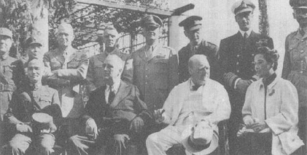
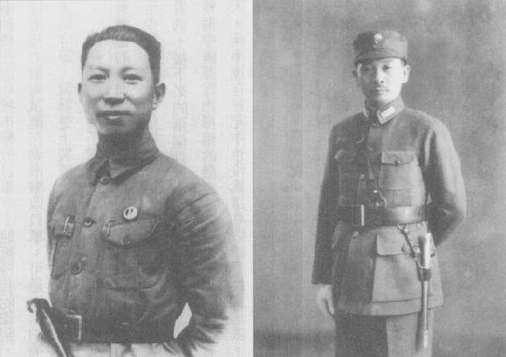
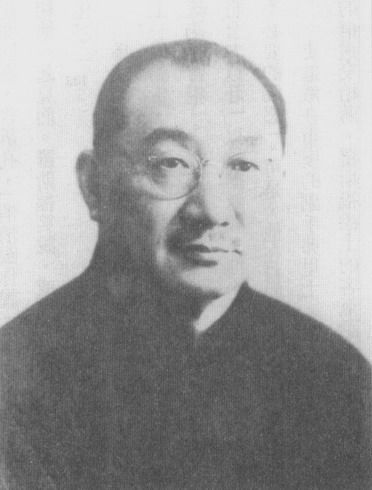
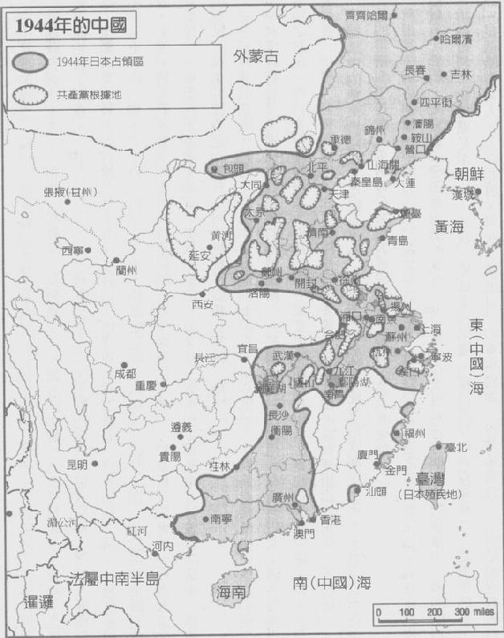

|
前一页 后一页 回目录 回主页 |
第六章：中国战区 1943年11月21日黎明，委员长和蒋夫人搭机抵达开罗，将和罗斯福、邱吉尔及盟国高阶将领开会。陈纳德未被美国战争部邀请与会，但他以中国空军参谋长身分出席。他到机场迎接委员长夫妇，护送他们到别墅。蒋夫人因结膜炎，加上长途旅行的疲累，没有参加上午拜会邱吉尔和蒙巴顿的行程，但是当天晚上六点半，两人一起与邱吉尔会谈。邱吉尔很不高兴在罗斯福的战后四强构想当中，竟然有个地广民穷、反帝国主义、反殖民主义的非欧洲国家在内，而且在缅甸战役中他想尽可能避免军事上的参与。可是，邱吉尔写下，他“对（蒋）镇静、内敛和有效率的个性印象深刻”，也认为蒋夫人“很抢眼、有魅力”①。蒋和邱吉尔初次见面后，认为邱“镇静沉着”，“无愧为抗日反共之前锋”。但是经过4天的会谈，他就会改变主意了。 ① Winston S.Chruchill, The Second World War and an Epilogue on the Years 1945 to 1957 (London: Cassell, 1959), p.727. 次日，会议在可以看到金字塔美景的米纳饭店（Mena Hotel）举行。三大巨头、盟国联合参谋长团以及大小幕僚的第一次全体会议当中，蒋宋美龄是唯一的女性。英国参谋总长阿兰布洛奇（Lord Alanbrooke）元帅说，当她在窄裙内挪腿换个姿势时，他好像听到年轻军官们发出一股低声的叹息。相形之下，阿兰布洛奇形容她的丈夫，这位中国领袖像“松貂和雪貂的混种”。经过一天的会谈，阿兰布洛奇认为蒋“根本没掌握到战争的大局势”①。但是阿兰布洛奇并不知道，蒋认为直接和罗斯福讨论，即可解决一切与中国有关的重大军事、政治问题；在他看来，其他的会谈都不具决定性。 ① Field Marshall Lord Alanbrooke, War Diaries, ed. Alex Danchev and Dand Todman (London: Widenfeld and Nicolson, 2001), entry for November 23, 1943. 蒙巴顿提出他的进攻缅北作战计划——“冠军行动”（Operation Champion）。这是一个比经蒋介石核可的史迪威计划，或罗斯福等人在华府及其他场合向中方承诺的计划，都更为局限的作战计划。“冠军行动”根本就不是以“陆海空全面作战”打通前往中国之陆上通道；它仅提议夺取钦敦江对岸的一个桥头堡，并在往密支那的铁路做空降行动。行动的下一步也还不明朗。安达曼群岛（Andama Islands）是这个计划唯一的两栖登陆目标，而纵使占领此地，也不太会阻断日军在缅甸的补给线①。史迪威10月间交给蒙巴顿的批评意见，批评“冠军行动”像“被恐惧渗透”，又形容攻打安达曼为“流产”②。 ① Chiang Diaries, Hoover, November 23, 1943, box 43, folder 10. ② Barbara Tuchman（杜希曼），Sand against the Wind: Stilwell and the American Experience in China (London: Macmillan, 1971), p.402. 开罗会议一开场，蒙巴顿就说明“冠军行动”将发动32万名盟军部队，其中16万人是印度和缅甸部队、2万名英国特战部队、3000名美国特战部队，和13.7万名在印度和云南整训的中国军人——即X部队与Y部队。邱吉尔意外承诺皇家海军将派遣2艘大型战斗舰、4艘大型航空母舰和10艘小型航空母舰，以确保掌控孟加拉湾。轮到蒋发言时，他很高兴，但再次强调大规模两栖作战和海上优势是必须的。目标应该是瓦城而不是密支那，另外驼峰空运作业应每个月送1万吨物资到中国①。霍浦金斯后来写说，蒋通常不愿谈论特定细节②。这位中国领袖把实质交涉留待与罗斯福来谈，所以他在联合会议上的发言简洁扼要，而且事实证明，他对盟军将遭遇的日军兵力之推估，颇有先见之明。蒋在11月23日会议的简要版发言纪录是：“缅甸战役的成功，不只要看在印度洋建立的海军势力，还要看海上行动和陆上作战的同步协调。如果海上力量不能集中，仅靠陆上部队力量的集结，还不能确保胜利……敌军在缅甸可部署的兵力可达到10个师，如果我们不切断他们的增援途径，他们的部队还会更大。”③ ① Charles F.Romanus and Riley Sunderland, Stilwell's Command Problem (1956; Washington, D.C.: U.S.Army Center of Military History, 1978), pp.62-63. ② Robert E.Sherwood, Roosevelt and Hopkings (1948; New York: Bantam Books, 1950), vol.2, p.393. ③ FRUS(1943): The Conferences, p.117. 罗斯福总统住在美国大使官邸。当天夜里，罗在大使官邸设宴招待蒋氏夫妇①。霍浦金斯是唯一的陪宾。蒋夫人脚登露趾鞋、身穿黑色丝绸旗袍，和去年叼扰甚久的老朋友罗斯福打招呼。双方都有译员坐在边上，但美龄不时修正她先生译员的翻译。蒋原本就视罗斯福是“超乎常人”的大政治家，经过一整夜坦诚长谈后，对罗更增添敬意②。相形之下，蒋的尖噪子以及在权贵宾客前的拘谨、礼貌，却没让意气风发、随意的美国东道主产生太多的友谊感。 ① 蒋氏夫妇11月22日与罗斯福总统进行正式的“初识”会谈。 ② Ray Huang（黄仁宇），Chiang Kai-shek and His Diary as a Historical Resource (Armonk, N.Y.: M.E.Sharpe, 1996), part 2, p.53. 然而，在这次严肃的长谈中，两人似乎对一切事情都有相同共识。蒋赞同罗对于日本未来政府形态应由日本人民决定的看法。他提议，日本对中国的赔偿可以用工业和战争机械设备、商船及其他实体财产支付。他觉得驻日盟国占领军应由美国领衔；但罗坚持应该由中国国军来主导。蒋也同意罗对“俄国共产主义之政策”，强调莫斯科不可信赖，但又说在对苏关系上，将听从罗斯福的指挥。罗斯福强力支持东北和台湾回归中国①。两人早先在通信时就有共识，对战后世界有一致的看法，尤其认为必须终结殖民主义。此外，蒋还提到两人讨论了苏联参与对日战争的问题以及新疆的局势。蒋对这次会谈的结论是“非常满意”。罗斯福“以老友待我”②。 ① Chiang DIaries, Hoover, November 24, 1943, box 43, folder 10. ② Chiang Diaries, Hoover, November 23, 1943, box 43, folder 10; FRUS(1943): The Conferences, pp.322-325. 次日（11月24日）早晨，罗斯福的儿子艾略特（Elliot）发现父亲在床上用餐，问起昨晚的情形，罗答说：“发生好多事喔。我见到委员长了。”艾略特问他对这位中国领导人的印象如何，罗先耸耸肩，然后说：“昨晚和蒋氏夫妇交谈所学，胜过我和联合参谋长团开4个小时的会。”①蒋虽花了不少时间描叙述中国军队的困难处境，罗斯福对儿子说，他还是对某些问题感到不解，譬如：“为什么蒋的部队不打仗？”为什么蒋“试图阻止史迪威训练中国部队”？为什么他“将数以千计的精兵留守在共产中国的边界”？②总之，罗斯福依然认为蒋还在排斥让史迪威处理国军的问题，原因不明。即令如此，罗斯福“已决心要从中国（也就是，蒋）的角度，让开罗会议成功落幕”③。 ① Elliot Roosevelt, As He Saw It (New York: Duell, Sloan, and Peace, 1946), p.142. ② 同上注。 ③ Sherwood, Roosvelt and Hopkins, p.395. 24日，蒙巴顿拜会委员长和夫人。他以后勤角度说明为什么比较有野心的攻打瓦城计划，是行不通的。数十年后，蒙巴顿告诉替史迪威写传记的杜希曼，委员长很显然并不了解“monsoon（季风雨）”这个字，蒋夫人也说明委员长“完全不认识季风雨”。杜希曼两次提到这个故事，声称中国没有季风，“因此，蒋根本不了解”，她甚至把这当作“史迪威难与委员长共事”之“启发性证据”①。但是，蒋的备忘录、信函和日记多次提到缅甸的“雨季”及它对军事上明显的影响；看来他只是不熟悉“monsoon”这个出自葡萄牙文的单字。在符合先入为主刻板印象的情况下，一场的谈话就像这样表面上赤裸裸实则全然误会，成了历史传说的一部分。当天下午，蒙巴顿向联合参谋长团报告，蒋已经接受规模缩小的空中支援，很高兴英国能派出舰队，并且会热切支持此一作战。 ① Tuchman（杜希曼），Sand against the Wind, p.404. 但就像“monssoon”这个字，蒙巴顿也误解了蒋，误以为这位中国领导人现在对英方整体计划十分热中。一部分问题可能出在宋美龄的翻译上，她试图让蒋的发言显得越正面越好。1个多小时之后，当蒋私下和马歇尔共进午餐时，就证明蒙巴顿误会蒋的意思了。蒋冷静地告诉马歇尔他反对英方的计划，因为他相信它“会导致重大损失，甚至可能会失败”①。他重申两栖登陆的必要性，又说云南的国军（Y部队）不应前进到超过腊戍。美方纪录并未显示马歇尔有任何不同的意见②。事实上，马歇尔和美国其他军种首长在开罗会议上，自始至终都强烈支持蒋的立场，坚持全面展开两栖登陆缅甸作战，即所谓的“海盗行动”（Operation Buccaneer）③。 ① FRUS(1943): The Conferences, pp.347-348. ② 同上注，pp.338-339. ③ 11月26日，马歇尔在联合参谋本部会议上，对这一议题很坚持。FRUS(1943): The Conferences, p.364. 当天夜里，邱吉尔设宴款待蒋氏夫妇。邱吉尔竟说海上攻击在1944年5月之前不能进行，使其宾客大感意外；那时候雨季就将要开始了。除此之外，这场晚宴可说又是一场令人满意的聚会。同一天夜里，霍浦金斯携带美方版本的公报草稿拜访蒋氏夫妇。蒋发现前一天晚上他向罗斯福提到的“每一项意见”都列在公报草稿里。他在日记写下，他对罗斯福在公报中所展现的诚意，十分感动①。 ① Chiang Diaries, Hoover, November 24, 1943, box 43, folder 10. 11月25日是感恩节。蒋氏夫妇在美国大使官邸的庭院里，坐在白色柳条椅上和罗斯福、邱吉尔拍了那张著名的照片。蒋氏夫妇和罗斯福喝了茶后，三人于下午5点再次会谈，这次只有艾略特陪侍在侧，共谈了75分钟①。如罗斯福告诉蒋，他“最头痛”邱吉尔。他说：“英国根本不愿见到中国成为大国。”罗、蒋再次同意在新的世界秩序中，英国必须放弃她的帝国②。至于缅甸问题，两人确认先前达成的共识，即需要两栖登陆作战，并说服英方提早其海军部署③。在罗斯福的压 力下，蒋表示只要抗日战争仍在进行中，他就会和中共成立联合政府，但条件是（一）美国要确保未来苏联会尊重中国在东北的主权；（二）美国要支持让英国终止她在香港及中国其他地方的“帝国权利”④。 ① FRUS(1943): The Conferences, p.349. ② Chiang Diaries, Hoover, November 26, 1943, box 43, folder 10. ③ 同上注。 ④ Roosevelt, As He Saw It, p.164. 罗斯福回避东北问题做保证，但说苏联会尊重东北的国界。他建议，香港应归还中国，但要做为自由港，蒋同意。 蒋告诉罗，他对国共联合政府的意见是非官方的——也就是，只能给罗斯福知道。不过，他们俩对此问题的意见其实是一致的①。罗斯福接着告诉蒋，美国将依蒋的要求提供美国武器及训练给中国90个师的部队②。这是两位领袖又一次成功的会谈。 ① Chiang Diaries, Hoover, November 26, 1943, box 43, folder 10. ② Romanus and Sunderland, Stilwell's Command Problem, p.64. 根据史迪威的说法，这次会谈进行到下午6点15分至30分之间，罗告知马歇尔和史迪威两人，蒋已预备执行“缅甸计划”，包括派云南的Y部队投入战场，但有两项条件，而罗斯福完全支持蒋——确实掌控孟加拉湾，以及同步进行两栖登陆作战①。在这里，故事变得混淆不清，因为有一说 法指控蒋于一、两个小时之内，就在「每一点上」全盘翻转自己的立场；但也有强烈证据指出这个说 法不符事实。这个事件简短但令人难以忍受的细节’值得我们详加检视，一则可藉此证明对历史的扭 曲如何能深铸人心’再则也看清史迪威的为人处世。 ① 罗斯福总统的工作日志对罗、蒋下午的90分钟会谈进行到什么时候，有不同的说法；罗下一个约会排在下午6点15分。FRUS(1943): The Conferences, pp.63, 298-299. 关于史迪威、马歇尔和罗斯福的会谈，见Joseph W.Stilwell, The Stilwell Papers (London: Macdonald, 1949), p.232，及Romanus and Sunderland, Stilwell's Command Problem, p.64. 史迪威说，11月25日深夜，霍浦金斯找他去——“10点30分到，乐队演奏——哇！——和邱吉尔谈话。”后来，“霍浦金斯说，委员长下午6点表示不喜欢（缅甸）计划。”①霍浦金斯所说的计划，几乎肯定就是英方的计划，即蒙巴顿误以为他在11月24日上午和蒋谈话，蒋表示会支持的那个计划。蒋所同意的计划是他和罗斯福讨论的那份计划,不是蒙巴顿告诉他的那份。11月24日蒋和蒙巴顿会面之后，紧接着与马歇尔的谈话，以及11月25日下午5点到6点15分，他和罗斯福的会谈，都能够证实这点。罗斯福与蒋谈完后立刻告诉马、史两人的计划，才是蒋所属意的计划。霍浦金斯提到“下午6点”应该就说明这一切了。但是，史迪威在日记里对霍所说的反应却是“天啊！他又来了”，暗示霍说蒋改变了他和罗斯福沟通后的立场。事实上，罗斯福总统当天的工作日志记载，同一天夜里10点30分史迪威有和总统会面。在场的艾略特的纪录显示，史迪威谈到“他和蒋相处的困难”，但根本没提到委员长对与罗斯福的缅甸协议反悔——如果真有其事，史一定会在此场合提起。史迪威很不寻常地没在日记中提到他和罗的会面，这次会面有可能只是一个非正式的酒会（毕竟还有乐队演奏）②。 ① Stilwell, Papers, p.232. ② 关于“他又来了”，见同上注，p.231；关于晚上10点30分的会面，见Roosevelt, As He Saw It, pp.160, 162. 据蒙巴顿的说法，次日（11月26日）早晨，马歇尔告诉他，“晚上”委员长和罗斯福又碰了面，蒋“推翻了他在午餐前所同意的每一点”。蒋最近一次“在午餐前”的会谈是11月24日和蒙巴顿进行的，不是和罗斯福或和马歇尔，因此蒋据称推翻的原议，应是指所谓他对英方计划的同意，而这份同意是出自蒙巴顿的误解。因此这里的意见反复，明显出自蒙巴顿会错蒋于早晨会谈的意思，也可能出自史迪威错传霍浦金斯的话。罗斯福总统在开罗的工作日志没有记载，下午5点至6点15分之后罗、蒋还有过会谈。而且，罗斯福、蒋介石、霍浦金斯、邱吉尔和艾略特在他们各自的文件或谈话中，都没提到罗、蒋在11月25日更晚时有另一次会谈，或者提到这位中国领袖反复的立场①。 ① 关于总统的工作日志，FRUS(1943): The Conferences, pp.lxiii, 298-299. 我们猜测，史迪威很可能听到蒙巴顿的幕僚或是蒙巴顿本人提到，蒋出乎意料地赞同他们的计划，可是11月25日晚上10点30分之后，霍浦金斯告诉史迪威，蒋不喜欢英国人的计划。史迪威对马歇尔报告霍和自己的谈话，却误导马以为蒋对美、中计划变了卦，便推断罗、蒋在25日夜里有过第2次会谈，而且并不愉快。听到马歇尔转述霍、史谈话的二手版本，蒙巴顿“跑去找霍浦金斯”，霍给了他不附具体说明的“真相”，也就是蒋的确不赞成英方的计划①。 ① 关于“暂缓下来”，见Mountbatten, Dairy, p.35, and Stilwell, Papers, p.32. 国防部历史家只用一句话注明，11月25日“晚间”蒋和罗再次见面，“在每一点上都翻转了自己的立场。”他们完全没有交代这句话所本，但想必是从蒙巴顿的报告得出这句话。国务院历史家只说五角大楼的历史“显示”蒋“在每一点上都翻转了自己的立场”，但是国务院因为知道罗、蒋夜里并没再会谈，因此假设此一意见大逆转发生在下午5点的会谈。这一点当然不正确，因为罗斯福在5点的会议之后，已经找马、史去谈了。见Romanus and Sunderland, Commamd Problems, p.65; FRUS(1943): The Conferences, p.366. 史迪威日记对11月26日的状况之叙述，和蒋介石日记的说法，没有太大出入。不过，他在开头含糊地说：“11点的时候，路易斯（蒙巴顿）泄漏情报（应该是指蒋的意见反复）。他被花生米气坏了。谁不是呢！”令人意外的是，史迪威竟然不再提蒋在前一天所谓的意见大翻转。11月26日上午，蒋的确和史迪威以及一群美国将领会商“驼峰运输议题”；蒋记下，“气氛”很好——有一部分原因是，他“听到”罗斯福前一天晚上与一群美国人会谈时，称赞他的“能力”。史迪威则说蒋终于接受，美方将领只能试图符合他的运输量目标的承诺①。 ① 关于“气坏了”，Stilwell, Papers, p.232；关于“能力”，Chiang Diaries, Hoover, November 27, 1943, box 43, folder 10；关于“运补数量”，见Stilwell, Papers, p.233. 据蒙巴顿的说法，罗、邱听到蒋对前一天的结论全盘翻案后，于11月26日下午不备纪录人员，与蒋氏夫妇茶叙。蒋记载，他在下午3点拜访罗斯福，讨论了美国贷款给中国、外蒙古和西藏的议题。至于英军两栖作战登陆的议题，蒋只写罗“再次同意”把日期提前，只有邱吉尔不同意。蒋认为他和罗意见完全一致——的确如此。同时，联合参谋长团在下午2点30分开会，中方没参加，会中马歇尔表示，两栖作战（海盗行动）的进行有其“必要”，因为兵力不是问题，而且它攸关太平洋作战之成败，“中方接受”这个行动，而且“基于政治理由，此行动不能被抵触”。这是支持蒋、罗计划的坚决表态。罗斯福总统的工作日志记载蒋、罗11月26日只在下午4点39分碰头一次，那是三巨头、蒋夫人和其他人一起出席的会议，会中通过了公报内容，也讨论许多议题，如中国的经济状况、太平洋战后的安全、给中国90个师的装备、战后国际组织等。会后，邱吉尔和蒋夫人告诉蒙巴顿，蒋对每一点都同意；其实他自昨天与罗斯福会谈后，就一直是如此①。 ① 关于“意见完全一致”，Chiang Diaries, November 27, 1943, box 43, folder 10；关于“强烈表态支持”，FRUS(1943): The Conferences, p.364；关于“每一点都同意”，FRUS(1943): The Conferences, p.366. 史迪威次日的另一个怪异说法，有助厘清这一团疑云。蒋氏夫妇11月27日早早起床，匆匆参观金字塔然后径奔机场，取道印度展开漫长的回国之旅。可是登机前，蒋嘱咐史迪威留下来，出席联合参谋长团批准两栖作战的正式集会①。客气地送走蒋委员长夫妇后，史迪威赶去找蒙巴顿。根据东南亚司令部日记的记载，史让蒙巴顿“吓了一跳”，因为史说他奉命“留下来抗议。我必须坚守‘斗牛士’（空降攻打瓦城的计划代号）（Toreador），以及每月（驼峰运载量）1万吨”。蒙巴顿在其日记转述由他助手记下的主张；详细主张比上述还广泛。在这个版本中，史迪威说他奉命“对每一点都取得全盘翻案”，这几乎就和蒙巴顿前一天听到马歇尔所说的一样。这次对蒋又全盘翻案的指控，完全就是直接出自史迪威，而史在其日记中，压根都没提当天早上他听到蒋要“每一点”都翻案，或者他曾向“吓了一跳”的蒙巴顿提及此事②。 ① Mountbatten, Diary, p.35; Stilwell, Papers, p.233. ② Mountbatten, Diary, pp.35, 36; Romanus and Sunderland, Stilwell's Command Problem, p.65，引用东南亚委员会（SEAC）战争日记，1943年11月29日。 蒋很欣慰，回国途中在日记写下，开罗会议是他一生“革命事业”的“重要成就”。他很自豪自己的事前准备，以及“各种交涉之进行，其结果乃能如预期”。完全没有在最后一刻交代史迪威去要求什么的记载。很明显的，在这两天的任一天里，蒋在实质上或事实上都不曾改变想法①。 ① Chiang Diaries, November 27, 1943, box 34, folder 10. 有人认为，斯大林在德黑兰会议答应击败德国便加入对日作战，让罗斯福对蒋以及中国在战争中角色的兴趣迅速消退了①。但是，主张若苏联宣誓要攻打日本，中国是否留在战局中就无关紧要的人，是邱吉尔、不是罗斯福②。罗斯福从来没这么说。事实上，他警告邱吉尔，他们不应认定击败德国之后，苏联就一定会履行承诺③。好几座大型机场即将在四川省动工兴建，华府对中国的战略兴趣一点也没消退。罗斯福对儿子艾略特评论蒋的部队在中国“不打仗”，又批评这位国民党领导人的国内政策，但是关于蒋对世界局势和全球战略的分析（包括缅甸），对此，罗斯福在开罗留下的评语却是正面的。有人曾写说，罗觉得他和蒋的会谈“令人沮丧”；两人对战后去殖民化，以及以新的世界组织促进全球和平的看法，却完全一致。罗斯福特别钦佩的是，当他问蒋中国是否“想要中南半岛”，这位中国领导人立刻回答“绝不”。罗也认为蒋答应与中共成立联合政府是个历史性的成就④。 ① Tuchman（杜希曼），Sand, pp.407, 521. ② Sherwood, Roosevelt and Hopkins, P.431. ③ FRUS(1943): The Conferences, pp.705-710. ④ Stilwell, Papers, p.238; Roosevelt, As He Saw It, pp.164, 204；秦孝仪，《大事长编》卷五，p.2282. 德黑兰高峰会后，罗斯福和邱吉尔飞回开罗，准备敲定缅甸战役计划。照罗的自述，他代表蒋“像一头骡子般顽固地（和邱吉尔）奋战”，争取英国海军支援作战。霍浦金斯指出美方“强烈觉得蒋的要求应被兑现；不能口惠而实不至”。缅甸的海军登陆战只需动员18至20艘登陆船舰，但是大规模的反攻欧洲之战几个月后就要开打，邱吉尔拒绝投入任何英国船只到缅甸战役①。尽管曾给予蒋无条件承诺，罗斯福勉为其难地忽视美方联合参谋长们的意见，最终同意英国人把两栖登陆作战延后一年②。 ① Sherwood, Roosevelt and Hopkins, pp.395, 396. ② FRUS(1943): The Conferences, p.681. 回国途中，蒋氏夫妇在印度蓝伽短暂逗留，检阅由史迪威的僚属在当地训练的国军部队。这支驻印度的国军部队（X部队）人数约3.3万人，全都体格强健，且每个人都配备现代武器——对国军来说，这是很特别的体验。蒋对这支斗志昂扬的部队训话，也对美国军官保证若有人员伤亡，会立刻补足。梅瑞尔（Frank D.Merrill）将军麾下3000名美国特种部队已准备好支援中国人。盟军有了喷火式战机（Spitfire）及其他新型飞机，现在终于在缅北掌握了全面空中优势，包括有能力以空投方式补给整个师的需求，和破坏从曼谷到仰光的铁路交通。蒋相信，不久后英国海军也将控制缅甸海岸之进出。这一切和史迪威1942年春季攻势前的情势，完全不可同日而语。

然而，和第一次缅甸战役相似的是，情报工作依然很烂。孙立人的国军新38师若干营，将已从印度雷多开始兴建的新补给线又往前推进了约50英里，却在胡康河谷遭遇日本精锐的18师56团守军。然而，史迪威总部（全是美国军官）没给孙立人任何日军在本区活动的情报。孙部呈报发生激战，代理史迪威职务的波特纳（Hayden Boatner）将军还不肯承认当地有火力强大的敌军①。原来，波特纳是受到参二情报处的误导，低估了日军的实力——参二处是由史迪威的儿子小史迪威（Joseph W.Stilwell Jr.）中校负责。经过又一次遭遇战后，孙部退回原有防线，等候史迪威将军的归来②。1943年蒋介石与宋美龄前往埃及开罗与美总统罗斯福（左二），英首相丘吉尔（左三）进行高峰会，蒋认为这是“中国一大胜利” ① Romanus and Sunderland, Stilwell's Command Problem, pp.41-42. 提到驻印国军（CAI, Chinese Army in India）总部此次失败以及其他失败时，军事史学家经常用中文发音称这个由史迪威指挥、美国人担任幕僚的机构为“指挥部”（Zhi hui bu），而不是用英文“headquarters”这个字。在驻印国军的编制表上，也只用中文发音的指挥部标示，因此让人搞不清这个驻印国军总部完全由美国人担任幕僚。许多读者可能以为“指挥部”是个中国单位，尤其是蒋介石的单位，因此情报失误全是蒋不好。 ② Romanus and Sunderland, Stilwell's Command Problem, pp.46, 123-124. 12月1日，美、英、中三国签署的开罗宣言正式公布。在各种历史性的声明当中，它宣示将把日本从中国窃占的一切领土（最重要的是东北和台湾）交还。12月3日，蒋写下“全世界视开罗为中国一大胜利”。蒋委员长夫妇和罗斯福、邱吉尔合照的照片让中国人民万分动容。一个多世纪以来，中国领导人第一次和西方列强领导人平起平坐。蒋将功劳归给蒋夫人，因为她每天工作12个小时，还亲自出马和罗斯福进行一项重要的财经交涉（只是，后来的成果并没有蒋氏夫妇当时认为的那么好）。委员长把中华民国最高荣誉的青天白日勋章颁给她①。 ① Ray Huang（黄仁宇），Chiang Kai-shek, pp.53-54. 这桩财经大突破发生在开罗会议的最后一天。11月26日，宋美龄奉丈夫指示单独拜访罗斯福。她和罗斯福达成多项协议，让委员长兴奋到忘了自己曾发誓不向美国领导人要求财务援助；他派太太去问罗斯福可否贷款10亿美元以解决中国的通货膨胀问题。回来后，美龄向蒋表示罗斯福说他“完全了解中国经济的恶劣状况”，“爽快同意”蒋的请求①。委员长简直不敢相信自己和中国是如此幸运。他立刻在夫人陪同下去向罗斯福表达谢忱。一向和蔼可亲的罗斯福在会谈中的发言，让蒋氏夫妇深信未来将有一笔贷款②。 ① Chaing Diaries, November 26 and 27, 1943, box 34, folder 10. ② Chiang Diaries, November 26, 1943, box 34, folder 10. 可是，罗斯福12月6日回到开罗时，却对史迪威有另一个讲法。他说，蒋氏夫妇要求贷款10亿美元，但是他告诉他们，那恐怕很难得到国会的同意。他告诉史迪威说,他计划以5.5千万至1亿美元购买中国法币，来抑制中国的通货膨胀①。我们只能猜测罗斯福告诉蒋氏夫妇，他觉得再申请一笔贷款的主意不坏，但也提醒说，恐怕很难得到国会和财政部的同意——蒋氏夫妇则认为，既然罗个人原则上同意支持申贷，就一定会成功。 ① Stilwell, Papers, p.237. 史迪威12月6日和罗斯福的见面，只有20分钟。可是，他在日记里形容罗斯福是“轻浮的傻子”①。据史迪威的说法，罗斯福突如其来地问他：“你认为蒋还能撑多久？”史答说：“情势很严峻，若去年五月（日军进攻）的情况再发生一次，蒋可能就垮了。”罗于是说：“那我们就应该找别人或一群人来顶替。”史对此表示：“他们可能会来找我们。”罗说：“是啊，他们会来找我们。”②史迪威在两张纸上写下他对总统想法的印象，一张说：“让中国留在战局。我们必须保住我们的侧翼阵地。”另一张说：“如果蒋介石翻船了，支持别人。”③ ① Tuchman（杜希曼），Sand, p.410. ② Stilwell, Papers, pp.236-238. ③ Romanus and Sunderland, Stilwell's Command Problem, p.72. 在史迪威不成册的纸页中找到。 艾略特却对史迪威（蒋天真地留下来代表他的人）和他父亲此次的会谈，留下简短但不一样的记载。艾略特写下，史迪威表达他对“委员长政治手段”的不满，指控蒋“保留所有实力以便在战后对付中国共产党”。但是，罗斯福“脑子里还想着别的事”，包括“他和蒋的协议，以及他后来又和斯大林达成的协议”。他除了“力促史迪威尽量努力把事办好”之外，没多说什么①。 ① Roosevelt, As He Saw It, p.207. 回到重庆，蒋在日记里承认，尽管开罗高峰会是“中国外交史上空前之胜利”，他内心却唯有“忧患”而已①。国内的坏消息太多。其一是日军继续进犯湖南、湖北。第二是戴笠破获一桩阴谋：一群年轻将校计划在委员长从印度回国于机场降落时，予以劫持。戴已逮捕阴谋策划者，这些陆军参谋学校毕业生说，他们并不是要推翻委员长，只希望促请他铲除政府和军中的贪腐②。蒋下令把他们枪毙或判刑。我们可以相信，其中有些就是曾与窦恩将军讨论“上层变化”的人③。 ① Chiang Diaries, December 4, 1943, box 43, folder 11. ② Hsi-hseng Ch'i（齐锡生），Nationalist China at War: Military Defeats and Political Collapse, 1937-1945 (Ann Arbor: University of Michigan Press, 1982), pp.113-114. ③ 同上注。 所谓的青年将校阴谋已经够糟，但蒋最大的隐忧是强大的军方司令官和各省掌权者，有可能对他不忠。他前往开罗之前，经常作乱的粤系将领李济琛（在桂林任职）就传出正在筹组一个南方将领集团，一旦重庆政府垮台即可出面统筹大局。据说，李济琛已和第7战区司令长官余汉谋、第4战区司令长官张发奎和第9战区司令长官薛岳达成共识。当蒋命令李到重庆接某个新职务时，他一口就拒绝①。蒋在和手下许多司令官（就某种程度来说，是全部）往来时困难重重，从这多少看出端倪。被指涉参与此事的其他将领没有位置不保。 ① 同上注，p.114。 接下来的18个月，史迪威就像之前的窦恩一样，可能在私底下和信得过的国军将领谈话，让他们明白他对蒋的负面观感。果真如此，这些谈话一定有许多被戴笠手下的特务窃听到，或是遭合作的军官向戴笠打报告。有一天蒋和白崇喜见面时，对白暗示了此一情报能力，叮嘱他“讲话要小心”。当天稍后，白以一封文言文信函向委员长感谢其建议①。 ① 此处和白崇禧的互动，参见秦孝仪，《大事长编》卷五，pp.2192-2193。 尽管白崇喜在重庆位居要津，身兼副参谋总长和军训部部长，他仍是桂系三巨头之中，与中共显然保持某些秘密接触的唯一一人；不过，抗战之后白却是最反共的高阶将领之一。周恩来曾说，广西、浙江将领和中共有“最密切的接触”。周说，中国“半数以上”的军事领袖“环绕着蒋介石”①。但是，即使这些人也只是表面向蒋效忠，而且基于保险也保持与共产党的秘密往来。 ① 周恩来1939年8月致中共中央政治局报告之摘要，其副本出现在共产国际档案中，RGASPI, collection 495, inventory 10a, file 296, sheet 146-96. 一 史迪威在12月11日回到昆明，次日就召见他信赖的副手窦恩将军。根据窦恩回忆录记载，史迪威告诉他，他在开罗接奉一道令他大为惊讶的口头命令。史说，这道命令要他“准备暗杀蒋介石的计划”。史迪威说：“老大以他那种威严的口吻告诉我：‘如果你不能跟蒋好好相处，又不能换掉他，那就一劳永逸除掉他。你知道我的意思吧？换个你能驾御的人。’”史迪威又说，这道命令不是要杀掉委员长，只是要准备一个计划。他不认为会有进一步的指示，他说：“美国不搞这一套。”但他还是指示窦恩去“规划”可行的办法，等候指令①。窦恩和另两名美国军官规划出一个备案：利用委员长搭机到蓝伽视察的机会，让美国飞行员伪称引擎故障，接着把一个不管用的降落伞给委员长，然后协助他跳机。听了这卡通式的计划后，史迪威表示：“我想这计划行得通。当上级下达命令时，我们就别无选择了。”这是窦恩最后一次听到此一计划②。 ① Frank Dorn, Walkout with Stilwell (New York: Thomas Y.Crowell, 1971), pp.75-76. ② 同上注，pp.77-79。 但是，这并不是史迪威第一次下令准备暗杀蒋介石的备案。当时派驻印度的中印缅战区战略情报局高级官员伊福乐（Carl Eifler）上校表示，大约在1943年8月初至10月底期间，他奉召到新德里去见史迪威，史告诉他为了寻求“合逻辑的方法”进行战争，“有必要不让蒋介石挡路”。他要伊福乐去准备计划，但没说这道命令来自“老大”或其他任何人①。后来伊福乐因战略情报局的其他公事回华府，向适当的部门询问后得知肉毒毒素是最适合的武器，因为验尸解剖无法侦测出它。但史迪威没说这件事有任何急迫性，因此直到1944年5月，伊福乐才在史迪威的缅甸总部，向史报告已找到执行暗杀任务的方法。据伊福乐说，史迪威“摇摇头，表示他又有别的想法，已决定‘现在’不去执行它”②。 ① Thomas H.Moon and Carl F.Eifler, The Deadliest Colonel (New York: Vantage Press, 1975), pp.145-146. 伊福乐是中国战区战略情报局主管，但是他令局长唐纳文非常生气，因为他一直坚称他是受史迪威管辖。因此伊福乐觉得没有必要向战略情报局本部通报史迪威给他下达如此重要的一道命令。当他回到华府为其他事去见唐纳文时，也不提这件事。见Maochun Yu, OSS in China: Prelude to Cold War (New Haven: Yale University Press, 1996), p.113. ② Moon and Eifler, Deadliese Colonel, pp.146, 184, 193. 两位作者并没说，史迪威在1943年的何月何日首次向伊福乐提到筹划暗杀蒋。 窦恩和伊福乐都是史迪威的死忠支持者，而且彼此显然互不认识。以下达给费恩的命令而言，我们推测史迪威是把罗斯福12月6日一句随口说说的话，即如果蒋出了事就得找个新人，当成是“老大”下达命令要拟定刺杀蒋介石的计划。但是，依此证据得到如此结论是荒谬的。罗斯福肯定没要史迪威去准备一个杀害美国关键盟友的备案，一个在他下一次“炉边谈话”中被他形容为“具有十足远见、伟大勇气”的人；更何况这个人的妻子当年曾两度到白宫作客。此外，罗斯福此时并没有生蒋介石的气，反而是对美国一再打破对蒋的承诺，颇感愧疚。在开罗，他和蒋事事意见咸同——甚至国共合组联合政府都可取得共识；罗斯福又“像一头骡子般顽固地”向邱吉尔力争英国海军对缅甸战役的支援①。罗斯福还告诉儿子，没有其他人可取代蒋介石的领导地位，而且“纵使蒋氏夫妇有许多缺点，我们仍必须依赖他们”②。 ① Sherwood, Roosevelt and Hopkins, pp.395, 396. ② Roosevelt, As He Saw It, p.154. 显然，史迪威无意识或有意识地曲解了罗斯福的一句戏言。然而史迪威给伊福乐的命令，远早于他和罗斯福或窦恩的谈话，也没有在下达前表明是来自上级的某人。对照史对伊福乐谈话的时机，我们颇能断定他首次下达此一命令，是在10月7日至15日于印度时；也就是10月2日史迪威在重庆听说蒋介石已要求他解职之后的事情①。 ① Stilwell, Papers, pp.217-218. 蒋从开罗回国后，就执起洞庭湖地区两湖大战的指挥权。受威胁最大的是湖南省会长沙，甚至桂林、衡阳也有可能受威胁，这些都是陈纳德空中攻击的相关地区①。美国驻华大使高思向华府报告日军新攻势时，预测中国不太可能发动大于“通常得过且过的防卫”②。事实上，国军拼命地抵抗来敌，伤亡惨重。衣暖食饱的日军使用现代枪炮、毒气瓦斯、空降部队，中国士兵在寒冬中却只穿平常的棉布制服、拿中国制造的旧步枪应战③。士兵为对抗毒气瓦斯，便找一块破布朝它撒尿，掩着脸凑合凑合。这些部队没什么机械运输工具，只靠肩上的扁担挑运装备，徒步上阵杀敌④。 ① 许郎轩、张明凯合著，《中日战史（1937～1945）》（台北：崇武出版社，1971）p.412。 ② FRUS(1943): China, p.168. ③ Ray Huang（黄仁宇），Chiang Kai-shek, p.64. ④ Claire Lee Chennault, The Way of a Fighter (1949; Tucson, Ariz.: James Thorvaardson and Sons, 1991), pp.262-263. 尽管国家大事繁忙，蒋很少工作到深夜。在美龄和亲友陪侍下，他晚上偶尔会观赏外国战争影片，但通常则在埋头写作《中国之命运》，接着读点史书，然后再享受一下读唐诗的乐趣。做晚祷就寝前，他一定再读另一本书《荒漠甘泉》。这是美国传教士考门夫人（Chas. E.Cowman）1930年代编纂的基督教见证选集。蒋在每日鼓舞人心的信息和故事旁写下自己的感想，约伯的启示是这本文选的主调——面对灾祸、悲剧、侮辱和失败都应坚忍不拔。有一句他应该会很在意的话宣称，“凡被神大用的人，神先要使他的心片片破碎……这是需要忧愁来开拓灵魂。”① ① Mrs. Chas. E.Cowman, Streams in the Desert (Los Angeles: Oriental Missionary Society, 1931), p.23. 靠近1943年底的时候，蒋和未署名的文胆陶希圣，完成了《中国之命运》，此书具体呈现他对中国的伟大文化和历史，及其璀璨前途的观点①。这是蒋对毛泽东论中国之未来的《新民主主义论》的回应。《中国之命运》在国民党地区列为学生、公务员、军官和国民党员必读书籍，就像毛的著作在共产党控制区一样。这本书反映出蒋民族主义、高度反帝国主义和严格威权主义的清楚形貌，但是在世界事务上，它又是自由的、国际派的立场。 ① Chiang Kai-shek（蒋介石）China's Destiny and Economic Theory (New York: Roy Publishers, 1947). 《中国之命运》主张毎个中国人都有权利和“义务”加入国民党。蒋宣称，公民“应特别注意、无时无刻不忘服从国策的责任”，人人应守纪律、效忠。他引用孙中山的训示“我们必须放下‘个人自由’的想法”，团结彼此“成为强壮统一的整体，就像沙石、水泥和起来的群众”。蒋所支持的确实就是这种公开的集权政体。他拒退自由主义、共产主义，并重申孙中山学说所谓“民主达成前，必先经历”一段无限期的训政。蒋像孙一样，做了令人不安的断言，说民族主义方针乃最优越的人权条件，这是全书最近乎法西斯主义的一段。他的确做了无恶意的断言“我们中国古代学问的博大精深，任一西方强权皆无从比附”，而中国人的国家方针是“得礼、正义、谦逊、荣誉”，但他也宣称“‘文化优越种族优越’的理论必须永绝于世界”①。 ① 同上注，pp.36, 40, 94, 96, 146, 157, 208, 231, 234-235, 263, 277, 279, 282-284, 289。 蒋的第二本书《中国经济学说》大约和《中国之命运》同时间发行。这书本来是要拿来做国民党中央政治训练学校的教材。它主张实行混合的计划经济、保护主义的贸易政策、加强国家对大型工业的所有权，以及“节制私人资本”。这本书有强烈的社会主义观点，它呼吁西方经济学家放弃物质主义和自私的个人主义，改采“大同世界”，一个“人性发展到最高点……没人可以不劳而获……人人都不会找不到工作”的地方①。在谈完孙中山的长期奋斗之后，《中国之命运》在第一章的最后一段写道：“我，蒋介石，自始即认同复兴中华民国，走上自由与独立之路。”接下来又三度用到“我”。然后蒋便不再于书中使用第一人称，或谈论自己的政治或历史角色②。 ① 同上注，pp.289-290。 ② 同上注，p.43。 中国政府并未出版英文版的《中国之命运》。蒋夫人反对出英文版，担心它自负、社会主义、反帝国主义，甚至反资本主义的观点会激怒美国人，尤其会激怒英国人①。《中国之命运》唯一的英文版显然只在纽约出版，由左派《美亚杂志》（Amerasia）的亲共主编贾斐（Philippe Jaffe）所出。我们可以说，这本书的高道德标准和对中国文化的理想化,呈现相当程度的天真和自我幻想，但不具追求个人权力的野心——更没有极权、种族净化或领土扩张的意思。可是，贾斐、谢伟思等人却把《中国之命运》和希特勒的《我的奋斗》相提并论。 ① Owen Lattimore, China Memoirs (Tokyo: University of Tokyo Press, 1990), p.186; Harvey Klehr and Ronald Radosh, The Amerasia Spy Case (Chapel Hill: University of North Carolina Press, 1996), pp.29, 32-37, 42, 132. 蒋把开罗会议视为中国历史上空前的外交胜利，仅有短暂的时间。12月7日，罗斯福和邱吉尔致函蒋介石，表示美、英在德黑兰和斯大林商量后，已决定在1944年春末于欧洲发动大规模盟军作战；因此，届时不可能调拨登陆船到孟加拉湾进行两栖登陆作战。罗斯福向蒋提议照原定计划如期展开缅北作战，但不执行两栖登陆（不过美、英承诺仍会控制住孟加拉湾）；不然就延迟到11月，届时即可执行大型两栖登陆作战。同时，美方将加强扩充飞越驼峰的空中运输，载运补给给中国的空、陆部队①。 ① Herbert Feis, The China Tangle: The American Effort in China from Pearl Harbor to the Marshall Mission (Princeton, N.J.: Princeton University Press, 1953), p.120. 这个转变并没有让蒋非常惊讶；11月30日他在日记中曾说，考虑到英国人的狡诈，他不会对罗斯福有关海上优势的“承诺”“太认真”。甚且，他明智地写下，他不会“说除非英国投入其海军力量，不然我们不会投入我们的步兵，以免给英国人任何藉口”。他说，重要的是，如果原来承诺的海军没办法来，缅甸战役就要延后——罗斯福建议蒋采用的替代方案之一①。这个时候，蒋若是表示对美国领导人此一转变至为震惊和遗憾，但又不在此一脉络下要求其他援助，他就有可能站上有利的政治位置。而如果单纯接受延迟战役的方案，蒋可能会激怒史迪威，但就战略或其他方面，这么做对蒋本身并没什么不好。可是，蒋高估自己的外交手腕，也高估罗斯福对自己食言的愧疚感，走向了更机会主义的途径。 ① Chiang Diaries, Hoover, Nobember 30 and 31（月反省录），1943, box 43, folder 10. 他回信给罗斯福，笔调平静，但表示很担心盟国食言对中国军民的影响。他又旧调重弹，提起“整个中国前线突然崩溃”的可能性。他甚至宣称，除非采取重大措施展现“您（罗斯福）对中国战区的真诚关心”（意即蒋氏夫妇认为罗斯福在开罗所给的承诺），否则“我们不可能再撑过6个月”。委员长建议美方提供10亿美元贷款，给中国的飞机加倍（即把承诺提高为1000架），驼峰运载量增加到每月2万吨。他在结语又警告说，日本人一旦察觉美国将忙着准备大举入侵欧洲，将会发动全面攻势终结中国的抗战①。 ① Romanus and Sunderland, Stilwell's Command Problem, p.74; Feis, China Tangle, pp.120-121. 等了2个多星期没等到回音，蒋在12月17日发出另一封比较收敛的信函，终于接受罗斯福的“建议”，同意把缅甸战役延迟到次年11月。他又再请求援助，但不再提及先前所说的威胁。蒋可能意识到第一封信的伤害性，次日，他赋予史迪威全权，让他可调度印度境内国军部队，以及已在缅甸胡康河谷作战的国军部队，并正式同意在西线战场（印度）立刻展开作战。史迪威力促华府要求委员长也派云南境内的Y部队在东线跨越萨尔温江。 罗斯福无疑受到霍浦金斯的影响，也确实因为食言而感到不好意思，他对蒋氏12月分两次来函的初步回应相当拘谨，只说针对中国军事和经济问题最好的答案，是尽速打开一条通往中国的陆路。他希望委员长能执行他这部分的任务以夺回缅甸，但没提到作战延期的消息，还说财政部正在研议其贷款要求①。蒋这次的回信比第一次复信更耸动、更愚蠢。他告诉罗斯福，如果贷款不下来，美国政府应开始支付驻华美军的一切开销（以20元法币兑1美元的官方汇率为准），包括成都附近已动工的B-29机场。他又吓唬罗斯福3月1日之后，“中国对（驻华）美军任何的计划，都无法提供物质或财务协助”，他写道，中国将持续奋战直到“军、民皆无可避免地崩溃”，然后再“视情况发挥所能”②。 ① Romanus and Sunderland, Stilwell's Command Problem, pp.79-80. ② 蒋介石1944年1月16日致函给罗斯福，White Paper, pp.492-493; Archur N.Young, China's Wartime Finance and Inflation (Cambridge: Harvard University Press, 1956), p.283. 孔祥熙和蒋的美国财政顾问杨格都试图说服他，把这封信的措辞改得温和些，但都不成功①。蒋觉得罗斯福的信语带威胁，因此自己回信的口吻与内容也无不妥。他主要是想争取一些具体的让步，他认为中国应得的让步；他也觉得有必要挽回他和中国的尊严②。但是，蒋的威胁在华府许多人看来像“怒火蒙蔽了理智”，正好让史迪威和战争部拿来利用。索摩维尔甚至建议美军停止在中国建造机场，“从别的方向进攻日本”。不过最后胜出的是理性派，职业外交官洪贝克（Stanley Hornbeck）当时担任国务院远东处处长，他分发备忘录强调，了解对蒋的回应有哪些风险之重要性，以及展现“政治家最高精神”之必要性。国务卿赫尔支持洪贝克，罗斯福遂摒弃战争部对固执的蒋下达最后通牒之建议③。 ① Romanus and Sunderland, Stilwell's Command Problem; Arthur N.Young, China and the Helping Hand, 1937-1945 (Cambridge: Harvard University Press, 1963), p.400. ② Chiang Diaries, Hoover, January 15, 1944, box 43, folder 13. ③ 罗斯福1944年1月15日电报，秦孝仪，《大事长编》卷五，p.2312。Tuchman, Sand, pp.412-413; Young, China and the Helping Hand, pp.284-285; Romanus and Sunderland, Stilwell's Command Problem, p.298. 因此，罗斯福温和地告诉委员长，由于地理的阻隔他们都冒着风险，在未针对共同问题达成协议前，就匆匆“做出不符任何一方人民利益的决定”。他告诉蒋，财政部不认为蒋所要求的贷款是必须的，但建议中国派代表到华府商谈汇率议题。然后是一段强硬的声明：此后美军在中国的开销，将限制在每个月2500万美元以内。因此，该额度所能换得的中国货币，就是在华美军全部的消费支出。蒋的回信重申只要盟国答应的两栖登陆作战一发动，或者X部队夺回密支那或腊戍，他就会派出云南的Y部队。此信一出，蒋为求平息风波，指示孔祥熙预付150亿元（中国货币）给史迪威总部，做为今后3个月的开支经费。孔接着衔命飞往华府，终于在货币议题上达成共识①。 ① Romanus and Sunderland, Silwell's Command Problem, pp.300-301; Feis, China Tangle, p.127. 同时，戴笠报告日军最高司令部正从东北及华北抽调15万名部队南下，并重建一条跨越黄河的大桥。研判这些部队移防是要加入未来几个月内，将在华中、华东地区发动的一项重要攻势。这项“一号作战”后来一共动员50万名武装精良的日军，是日本有史以来动员最多的一场战役①。 ① 许朗轩、张明凯合著，《中日战史》，pp.416-417；蒋介石1944年2月22日电报，秦孝仪，《大事长编》卷五，p.2327。Hara Takeshi（原武史），"The Ichigo Offensive: The Circumstances Leading to Its Execution and Its Results," paper presented at Harvard University Conference on Wartime China, Maui, January 2004, pp.1, 7. 日本发动“一号作战”的原因是日本商船船队已经少到战前水平的77％，导致日本从东南亚引进原料受到严重局限。东京的战略家希望藉由打造一个从朝鲜、满洲，一路穿越华北、华中、华南到中南半岛，然后再经泰国、马来亚到新加坡为止的日本占领区陆路走廊，以解决此一危机。要串起这条走廊，必须控制从河内到北平、大连的铁路。这个计划将导致日本在中国占领区朝西方和西南方扩展，确保帝国后翼，使原料（如石油、矿物、食粮等）及部队能从中国和东南亚运送到朝鲜半岛釜山港，再通过狭窄的对马海峡到日本。这项计划所要求的大面积土地占领，也会摧毁陈纳德的新机场。4月6日，蒋接到情报，指出日本的目标不仅是要摧毁最东边的机场，还要打开大连至河内的“大亚洲铁路”①。 ① Hara Takeshi（原武史），"Ichigo Offensive," pp.1-7; Wang Qisheng, "The Hunan Battle: The Chinese Military Response to the Japanese 'Battle no.1,'" paper presented at Harvard University Conference on Wartime China, Maui, January 2004, p.3. 换句话说，当德军从欧洲各战场撤退、日军在太平洋也节节失利时，日本皇军却计划在中国发动其最大规模的攻势，大过麦克阿瑟所遭遇的任何攻势。在重庆以及其他盟国首都，关于希特勒政权可能在1944年内崩溃的讨论越来越活络。盟国虽并未告知蒋，但他猜想斯大林在德黑兰会议应已同意德国投降后，就会让苏联加入对日作战。蒋认为苏联一旦控制了东北、甚至北平、天津，将立场转硬，要求成立（由中共主导的）区域政府和区域自治。但是目前他也无法对此做些什么①。延安方面，中共党内主张和国民党合作的这一派，彻底失去仅存的势力。12月的中共中央政治局会议中，周恩来再次承认犯了“投降主义”（即亲国民党）的错误②。 ① Chiang Diaries, Hoover, March 12, 1944, box 43, folder 15. ② Peter Vladimirov, The Vladimirov Diaries (New York: Doubleday, 1975), p.184. 同时，在史迪威印度总部工作的戴维思，已就中国国内局势向霍浦金斯呈报不少噩耗。1945年2月，他建议派美国军事及其他观察团到中共基地，以减低中共倾向苏联的可能性，也牵制蒋想要消灭毛的势力之念头。2月9日，罗斯福正式要求蒋准许美国观察团到延安。蒋在日记中叹息“为共匪宣传所迷惑，急欲往延安明了共匪情性，而其在华一般幼稚武官，中毒更深”，但更严重的是，“（华府的）上级官吏”也是如此①。蒋拒绝此一请求，但表示美国代表团可参访华北任何一个接受中央政府号令的地方。罗斯福感谢委员长的回复，表示他将在近期内派出访问团，忽略了蒋的限制②。后来，蒋为了安抚美国人，批准一群西方记者到延安做首次访问。 ① Chiang Diaries, Hoover, February 13, 1944, box 43, folder 14. ② Romanus and Sunderland, Stilwell's Command Problem, pp.300-304；秦孝仪，《大事长编》卷五，1944年2月13、22日，pp.2322, 2327。 1月间，史迪威率缅境中国部队（现在编号新一军）继续在胡康河谷缓慢推进，另有一支英军从印度南下往阿肯（Arakan）海岸推进。但是，蒙巴顿总部突然建议盟军放弃打通通往中国的补给线，改在苏门答腊建立根据地。史迪威大怒，立刻派波特纳将军至华府极力反对这个计划。蒙巴顿得知此事后，指控史迪威抗命犯上，要求将他解职。史迪威接到马歇尔的指示前往拜谒蒙巴顿，向蒙巴顿“认错”就像对蒋一样。两人表面上修好，心里头都希望除掉对方①。 ① Romanus and Sunderland, Stilwell's Command Problem, pp.162-163, 180-171. 盟国领袖没接受蒙巴顿的方案，缅甸战役继续进行。然后3月8日，日本3个师团只带着1个月的补给猛扑英军前线，出乎盟国之意料。不到几个星期，日军已包围6万名英、印部队，以及他们在英帕尔平原的仓库，并且攻打边城科希马（Kohima）——这是一个隘口，扼守通往阿萨姆河谷的路和执行驼峰运输任务的美国空军基地。日军转眼已抵达距加尔各答－阿萨姆铁路线不到20英里处，史迪威的中、美部队即将被切断。史迪威和英军再次严重低估日军实力。他写说：“这是个机会，我们将完成光辉的春季攻势。”①史迪威急电马歇尔，要他向委员长施压、派出Y部队，并急派国军另一个师支援胡康河谷的新一军。他给马歇尔的电文说：“如果我需要援助，那就是现在！现在！”蒙巴顿也向伦敦的上级求救，以“极其紧急”向蒋做同样“建议”②。 ① Churchill, Second Wrold War, pp.825-826; Stilwell, Papers, p.265. ② Romanus and Sunderland, Stilwell's Command Problem, pp.176-177, 180, 304; Tuchman（杜希曼），Sand, p.439. 罗斯福遂急电委员长，表示希望他命令Y部队指挥官合作，参与此“伟大的机会”（他故意不说是大危机）。蒋答说，中国若是不自量力，只会自怡伊戚；因此，除非英国发动两栖作战，Y部队不可能投入攻击。不过，蒋同意即时从云南派国军14、50两师去增援史迪威在缅甸的阵地。这些部队以破纪录的速度，在8天之内飞越驼峰，抵达阿萨姆①。 ① Romaus and Sunderland, Stilwell's Comand Problems, pp.305, 307-308; Tuchman（杜希曼），Sand, p.441. 蒋氏虽仅部分回应盟国的请求，仍有其重要性，而在史迪威的日记或是他给华府的报告中，却都没被提到。相反的，史迪威在3月30日的讯息中，预测盟国在缅甸将会被彻底击败，以说服罗斯福改采严厉言词诘问委员长。罗斯福在4月3日拍发给蒋的电文中说，缅甸战役的唯一目的就是打开通往中国的补给线，而“拿美式装备的Y部队，竟无法出动对付日本第56师团，这点是不被接受的”。罗斯福又说：“如果Y部队没用在此一共同目标，那么装备、训练他们的意义就全然不存在。”这封电文以老式的委婉用词作结：“我希望你能有所行动。”蒋决定暂不回答，“应忍耐暂不置复，以观其后也”①。于是史迪威把原定要拨给云南Y部队的一切驼峰物资，统统转拨给支援缅甸作战的第14航空队②。 ① Chiang Diaries, Hoover, April 5, 1944, box 43, folder 16. ② Romanus and Sunderland, Stilwell's Command Problem, p.310. 秦孝仪，《大事长编》卷五，p.2345。 蒋氏迫不得已，接受一速计的巧妙脱困法，以保留颜面。4月14日，何应钦致电马歇尔，声称鉴于战略及战术的考量，中国决定派Y部队横渡萨尔温江，迎战日军。蒋氏勉强解释此一痛苦、政治代价极高的暂缓出兵之策，是针对盟国打破在开罗对他的承诺、逼不得已的某种反抗①。他给Y部队司令官卫立煌下了一道指示：“不成功、即成仁！”②史迪威旋即恢复对Y部队供应补给，把给14航空队的补给降回原来的水准。 ① Chiang Diaries, Hoover, April 5, 1944, box 43, folder 16. ② Romanus and Sunderland, Stilwell's Command Problem, pp.313-314, 329, 340-341. 陈纳德强烈反对渡萨尔温江作战的方案，他警告蒋，日军在华中的大攻势迫在眉睫，而且势必延伸到湖南和广西。他认为，需要借重Y部队来抵御日军大举进犯。史迪威一再出错的重庆情报处表达其“坚定的异议”，不认为日军会发动大规模攻势。史迪威告诉陈纳德，“当前在印度（英帕尔）的危机”才是第一优先，他命令这位空军将领不得向委员长提出中国境内“军事情势紧迫的评估”①。一直到陈纳德的飞行员侦察到239节火车车厢运载日军往南、往西移动，史迪威的重庆总部才认为日军的大规模攻击确实迫在眉睫②。4月17日，日军第37师团数百辆坦克车和装甲载兵车，从已修好的桥梁跨越黄河，驶过平坦的河南麦田。他们的目标是扫荡黄河和长江之间的国军部队，清空平汉铁路③。汤恩伯第一战区的杂牌部队溃败四散，但是第28、31集团军保住了洛阳重镇。委员长透过电话亲自指挥洛阳防卫战，这不知是好是坏。蒋向他的参谋长史迪威请求从B-29仓库拨500吨汽油，供陈纳德部队支援洛阳守军。史迪威拒绝了，他认为委员长是自作自受。 ① 同上注，pp.312-314。 ② 同上注，p.322. ③ 同上注，p.319。 河南国军没多少大炮、3名士兵只有2支旧国造步枪，仍然英勇奋战。在中国的国军唯一的军事优势，是由陈纳德14航空队约90架飞机所提供的战术掩护。洛阳守军在接到蒋的撤退令前，已抵抗了15天，共牺牲2.1万名官兵①。 ① Hsi-hseng Ch'i（齐锡生），Nationalist China at War, pp.75-76; Romanus and Sunderland, Stilwell's Command Problem, pp.314, 323, 325, 326. 14航空队另有200架飞机负责防卫成都的B-29，还有150架飞机支援萨尔温江作战。见Chennault, The Way of a Fighter, p.290, and Romanus and Sunderland, Stilwell's Command Problem, p.370. 14航空队总共500架飞机（至1944年底为900架），与美国在大战期间提供给苏联21000架飞机、1800万吨补给品一比，简直就少得可怜。 二 5月11日夜里，河南陷入溃败，而7.2万名Y部队从滇西跨过萨尔温江，设法与史迪威部队会师。根据美国联络官的说法，中国远征军有精良的器械和充分的空中战略支援，英勇作战、表现亮眼。小区域的骤雨很快就演变成绵绵不绝的季节雨。但是美国飞机仍空投补给与弹药，国军亦全力杀敌。同时，史迪威率领的国军部队和梅瑞尔的美军特种部队在泥淖与大水中挣扎前进，抵达密支那郊区①。 ① Romanus and Sunderland, Stilwell's Command Problem, p.254. 尽管雨势滂沱，史迪威相信他率领的5个国军师团，很快就能和东侧、由卫立煌所领的12个师的Y部队会合。可是6月中旬，卫立煌企图攻占日军在萨尔温江防线的重镇龙陵，不料遭到反攻，1500名日军就击退了1万名国军将士。蒋盛怒，令卫立煌竭尽全力重新发动攻击，务必攻克龙陵。蒋又从华北调2个军加入卫立煌在缅甸的远征军。这些部队是第9、第4军区迎战日军下一波攻势所需的重要兵力。把这些兵力南调，再次显示蒋对盟国在缅甸求胜的坚定意志①。 ① 同上注，pp.355-360。Chennault, The Way of a Fighter, p.275. 美国飞行员不断回报，日军精锐部队持续从满洲沿新占领的铁路线往武汉集结。陈纳德再次吁请史迪威运用他的紧急权限，调动补给、运输装备以及B-29的作战单位，支援华东紧急局势。史迪威答复说：“在紧急状况证实无误之前，不能贸然做决定。”两天后，日军第6军团从武汉攻入湖南，另一些较小的部队则从广州和越南北上。“一号作战”的第二波攻势颇有夺占湖南大部分地区之可能，而湖南正是自由中国主要的米仓；另外它也威胁到14航空队在湖南、江西和广西的基地。陈纳德的第23大队飞行员每天在不良天候下出3、4次任务。他们给予日军沉重打击，但本身亦损失惨重——和欧洲战场美军轰炸机群的损失同等，甚至更多。这个大队的3个中队，有近半数的飞行员在那个夏天阵亡或被俘，其中还有三个是中队长①。 ① Romanus and Sunderland, Stilwell's Command Problem, pp.363-364; Chennault, The Way of a Fighter, pp.287-288, 292. 史迪威从缅甸丛林口述电报给马歇尔，坚持主张驻印度的英军司令部若不全面改组，1944年秋天从印度攻打缅甸的战役，便没有成功的机会。这等于是建议撤换他的顶头上司蒙巴顿。（史迪威为了保住职位，最近才向蒙巴顿当面“认错”，保证专业上的效忠！）史迪威又说，同样的道理，有鉴于“目前中国的最高统帅”（意即蒋介石）的状况，缅甸战役最好的进攻结果顶多是占领、坚守密支那空军基地。他的结语是，要想打通直抵中国的陆上供应线，动用一个美国兵团是必须的。言下之意，缅甸作战进度迟缓，全是蒙巴顿和蒋介石的错，和史迪威本人与蒙巴顿过分低估敌军实力，全无干系。 胡康河谷这头的胜负并非缅甸争夺战的关键，在印度东北部那头的激战才是决定性战役——日军在此地投入12万名最精良的部队。到了5月初，蒙巴顿已获得重大胜利，突破日军对英帕尔和科希马这两个印度重镇的包围。英国皇家空军载运、空投了1.9万吨的补给以及1.2万名的援军，也对敌军发动2.9万次的空中攻击。英军如此惊人、成效卓越的空中武力执行，远非陈纳德和中国人的空军所能比拟。日军在7月开始全面撤退，成了日本陆军迄今最大的败绩——伤亡高达5.5万人，其中13500人阵亡。 三 史迪威对盟军赢得缅甸战役的悲观看法，可能影响了马歇尔和参谋本部的新决定，他们试图不靠在亚洲大陆发动大战来击败日本；5月27日回信给史迪威时，马歇尔告诉他这个新的大方向。此后，美国在中国、缅甸的最高优先是增强空中战力，并基于此一目的增加驼峰空运运载量——与陈纳德主张的战略颇为接近。更值得注意的是，美方似乎并没有和中国战区最高统帅——蒋介石——讨论这件事①。 ① Romanus and Sunderland, Stilwell's Command Problem, pp.362-364. 马歇尔的信抵达的当天，国军部队和美国特种部队终于在史迪威的指挥下占领密支那的机场。日军兵力虽仅3500至4000人左右，却负隅顽抗，坚守密支那3个月之久。史迪威和他的国军部队官兵（包括未接受美式训练、但已配备美制新武器者）英勇作战、坚忍不拔，恐怕没有任何一位美国领像比史迪威在壕沟中待的更久了。这是一场比较小规模的战役。相较之下，中、日双方在华东的百万人激战，以及中、印边境的战斗都比密支那的规模大上许多——也是较为重要的战役。可是，美国新闻界对密支那之役（和史迪威）的注意，却远超过长沙或英帕尔。当数千名日军死守的密支那终于攻克，马歇尔称誉史迪威“赢的漂亮”①。 ① 特种部队及其指挥官们提供17000名英国、库尔勒、奈及利亚和缅甸特战部队参战，越来越不满史迪威，认为密支那之役根本就大错特错，败得糊里糊涂。史迪威的情报称城里头只有350名日军。见Shelford Bidwell, The Chindit War (New York: Macmillan, 1979), p.280. 同一天，史迪威抽空发电报给马歇尔，要求解除陈纳德的14航空队指挥官职务，理由是“抗命”！陈纳德违反史迪威的命令，向蒋介石通报日军准备在华东、华南发动巨大攻势。美国战争部——肯定就是马歇尔本人——回复说，在可预期的国军华东大溃败之前罢黜陈纳德，会使史迪威成为众矢之的。蒋介石认为“自抗战7年以来，军事局势之严重，未有如今日之甚者”。他亲自吁请罗斯福增加每个月给14航空队的补给，并把位于成都的所有美国战术军机和飞机都派给陈纳德调度；他也请罗斯福提供8000具火箭筒①。 ① Chiang Diaries, Hoover, May 28, 1944, box 43, folder 17; Romanus and Sunderland, Stilwell's Command Problem, 365. 隔了一星期，史迪威接到窦恩一份报告，指出有7000万发子弹交给国军，现在下落不明；若干反坦克步枪和无线电显然仍在重庆；中国人在昆明的炮和补给足供5个野战炮营之用。这些抱怨和实情有所出入。事实上，除了投入缅甸战役的X、Y部队，美国的军事器械或弹药很少交到国军手中。例如云南的这批炮，几乎肯定就是配给Y部队的军火。 根据中国军政部的数字，自从仰光沦陷以来，从1942年5月至1944年9月，98％飞越驼峰运来的军援，是交给14航空队——军政部还可以补充是交给B-29之作战使用，以及维持越来越多的大量驻华美军人员之用。美国总共只供给X、Y部队以外的200万国军，351挺机关枪、96门山炮、618支反坦克步枪、28门反坦克炮、5000万发步枪子弹。这些项目当中，只有60门炮、50支反坦克步枪和3000万发子弹是在1944年6月之前运交；其余是之后才运交的①。甚且，美国 ，将由美国重整编训、装备，新组的国军30师Z部队（这是罗斯福答应替中国装训90个师的其中第二批部队），只会得到租借法案配给中国物资总数的一成。负责装训的美国小组估计，如果把这些军火分配到30个师去，每个师所得到的“几乎是零”②。 ① 1944年9月20日何应钦接受中央通讯社访问，《中央社新闻》1944年10月7日，秦孝仪编《中华民国重要史料初编－对日抗战时期》第三编：战时外交，（台北：国民党党史会），卷一，pp.512-514。中国从1941年5月至1942年4月滇缅公路中断前，从租借法案得到，经军政部分配或存储的物资，包括飞机1,657吨；军械（包括生产武器的设备及材料）24,000吨；车辆29,000吨；炮弹11,000吨；武器1,300吨；弹药8,700吨；造路设备19,000吨。Charles F.Romanus and Riley Sunderland, Stilwell's Mission to China (1952; Washington, D.C.: U.S.Army Center of Military History, 2002), p.49. 如果不是“滴水”，以当时的情势来讲，这当然数量极少。 ② Romanus and Sunderland, Stilwell's Command Problem, pp.321, 322. 史迪威没找蒋说明这些盘点不到的军火究竟是怎么回事，他迳自采信窦恩的报告，便决意不拨大量补给给国军地面部队，也拒绝针对日军在湖南的攻势采取紧急措施。6月初，史迪威回到重庆和蒋讨论军事危机，后来又到昆明和陈纳德商讨。蒋、陈均重提早先的要求，希望出动B-29轰炸武汉的日军库房。史迪威答应向华府转呈此一请求，但是当战争部回答说不行时，他简短回复华府说：“已明白指示，这也正是我所希望的……委员长向我施压，我才会发出上述请求。”和陈纳德商讨后，史迪威也是一个转身就忘了陈的要求。陈纳德要求把14航空队派去保护B-29轰炸机的200架战斗机，调派到华东对付日军即将发动的攻势①。 ① 同上注，p.369；Alsop, The Best, p.235. 根据史迪威的说法，6月5日在重庆，蒋告诉他“华东情势”（日军即将发动的湖南攻势）可以靠空中攻击来解决，并要求他“暂停飞越驼峰的武器和弹药运载”，以便全力运载燃料、零件和武器给第14航空队。史迪威答应蒋，他会确保14航空队每个月收到1万吨补给，但是他似乎也把蒋的指示解读为，命令他别使用美军运输从任何地方载送军火给在华东抗击日军的任何国军部队①。蒋是否真如史迪威所说地断言，单凭空中力量就可“解决情势”是很值得怀疑的；史迪威也没引用任何蒋说美、中军火都不必送给华东国军部队的话。蒋在他的日记中只记下，“下午参事汇报后召见史迪威，尚能如余意办理空运油料事，其态度如常。”②实际上，美国军火交到无关缅甸战役之国军手上的仅有“涓滴”，但蒋认为他有很好的理由去控制、甚至停止美国往后对其华东指挥官的任何武器援助。这时候，第9战区（湖南）司令长官薛岳，和第4战区（广东、广西）司令长官张发奎，越来越有不忠的嫌疑——史迪威的总部相信此一传闻是正确的。 ① Romanus and Sunderland, Stilwell's Command Problem, p.368. ② Chiang Diaries, Hoover, June 5, 1944, box 43, folder 18.

蒋不仅明白指示驼峰物资集中供应给14航空队，而且不坚持美方载送军火给湖南的国军（特别是受到威胁的长沙和衡阳），这显示他对部属将领忠诚度的重视大过好好捍卫这些城市。蒋的日记已明白揭示，他有极大的政治和军事动机在这些城市击败日军——他晓得若能战胜，必可争取到美国及国人对他的支持。因此，他必将采用强力措施试图在湖南击败日军。可是，深怕补给落到薛岳手里的他显然不会让14航空队空投军火给守军，就算是土制军火也不行。蒋也不跟陈纳德讨论空中补给事宜①。第9战区司令薛岳（左）与第4战区司令张发奎（右）因传闻遭蒋介石质疑忠诚度，被蒋阻断军火补给，也种下长沙沦陷之果 ① 中国有些小型兵工厂可以自制武器、弹药。根据魏德迈总部后来的调查，从1941年3月至1945年6月，中国兵工厂——显然得到美国供应非铁金属之助——得以制造出263,000支步枪、44,000挺机关枪、10,000门臼炮、1600万枚手榴弹和6.1亿发各种口径的子弹。以国军人数之多、作战之频和蒙受损失之重而论，除了手榴弹之外，这只是小量补充武器、弹药罢了。即使如此，蒋可能对这些国产物资仍有足够的备量，可以提供给长沙和衡阳，但陈纳德需要史迪威同意才能进行空投作业。6月7日，蒋派驻华府的中国战区代表报告，美国联参首长已同意使用驻印度的第10航空队重型轰炸机到中国战区空投2000至2500吨物资，可是蒋和史迪威都没有接受此案。驻华府商震将军1944年6月7日的报告，秦孝仪，《大事长编》卷五，p.2374。 陈纳德很气蒋不帮助薛岳，但他没跟蒋争，显然认为说了也是白说。但是，反对蒋氏决定一向毫无犹豫的史迪威，在解读蒋的命令时如果对其判断有任何疑问，大可以寻求解释或敦促蒋重新考虑；至少就纪录而言是好事一桩。可是，史就像蒋一样，在做这些决定时也有自己的政治盘算。我们将会看到，接下来的2个月里，史迪威明显希望蒋在长沙或华东其他地方遭到重挫，介以增加自己接管整个中国部队指挥权的机会。蒋、史两人对后来长沙、衡阳的败仗都难辞其咎①。或许是因为这个原因，蒋事后在日记中也没为这些败绩责怪史迪威。 ① 蒋明显地扣住对薛岳的一些或甚至全部弹械空投运补，但近年来对一号作战的一些研究，都没提到中方对这方面的反应，或许代表它对长沙、衡阳之役的结果并非重要影响因素。这些作品包括：北京研究此一战役的学者王奇生；当年的国军军官、著名的华裔美国历史学家黄仁宇，和日本学者原武史等人。薛岳倒是直接从美方得到一些榴弹炮；Romanus and Sundeland, Stilwell's Command Problem, p.372. 薛岳的总部离长沙有一段距离，当日军缩紧包围时，蒋正集中心力在协助与指挥负责守城的第4军军长张德能。蒋继续争取14航空队的后勤支援，对来袭日军及其补给线的进行更多攻击，同时又从其他4个战区急调6支军队驰赴湖南。当情势显示援军不可能及时抵达、长沙将会沦陷后，张德能于6月26日擅自率4000兵士，以及据说满载他个人财物的卡车弃城。虽然张是蒋的爱将之一，蒋仍下令将他枪毙①。长沙终于难逃沦陷的命运，日军占领了一片焦土之城。大部分老百姓早就逃之夭夭，连湘雅医院的中、美工作人员也不例外。长沙沦陷，使南方的衡阳、桂林，乃至西北方的重庆都暴露在日军的攻击范围。史迪威在临时首都的总部也开始计划撤离。罗斯福很快便派副总统华莱士到中国“稳住”蒋介石，并推动国共合作②。 ① Chiang Diaries, Hoover, June 20, 1944, box 43, folder 18. ② Feis, China Tangle, p.145. 委员长在重庆机场会见华莱士时，山城正是盛夏时节。在迎宾行列之中还有复出的宋子文，现已升任行政院长；他的妹妹宋美龄则留在车上①。蒋现在认为他在去年10月犯了大错；他应该听宋子文的建议，坚持让史迪威解职。蒋不仅怪罪太太，也怪罪孔祥熙夫妇和何应钦支持史迪威。宋美龄虽参加了与华莱士的会谈，但是异常沉默。这一次，由去年10月曾被她赶离与蒙巴顿、史迪威会谈的宋子文负责翻译。 ① New York Times, June 21, 1944. 陈纳德和他那位聪明、野心勃勃的年轻助理艾索浦，也在停机坪迎接副总统。人脉极广的艾索浦和华莱士是旧识，副总统欣然接受陈纳德的建议，让艾索浦担任他访华期间的“空军助理”①。 ① New York Times, September 24, 1951，引用华莱士1951年9月19日给杜鲁门的信，提到了1944年的中国行。Romanus and Sunderland, Stilwell's Command Problem, p.376. 华莱士抵达前两个星期，《纽约时报》刊载经蒋允许访问延安的美国记者所发出的第一篇报导。毛泽东在第一次接受美国记者的访谈当中，宣称中共“支持蒋介石（抗战）的政策从来没有动摇过”。他说，所有中国的严重问题，总结起来就是一句话——“不够民主”。这篇《纽约时报》报导充满了热情，作者对所见所闻甚表欢欣。这位未署名的作者——可能是艾金生（Brooks Atkinson）——报导表示，原是不毛之地的延安现已成为“中国的乐土之城”。他说，中共兵士自给 足“没给百姓制造负担”；日本俘掳没被关在营房，反而自愿协助共军部队。艾金生对读者肯定地说，俄国“从没展现对中国共产党的兴趣”，但是中共部队牵制了在华皇军4/5的兵力①。 ① Feis, China Tangle, p.160; New York Times, June 9, August 22, and October 6, 1944. 类似的新闻报导反映并强化多数重庆和华府美国官员的观点，将中国共产党视为政治上无害、民心所向（虽然尚未完全民主）的组织；如果政府许可，他们决心用尽全力对抗日本；甚至即使没有这种自由，他们也已经扛起抗战的最沉重负担。言下之意，国民党政权正沦于内讧、无心抗日，若要国共双方平和、民主地达成和解，端看国民党肯不肯合作。国务院替华莱士准备的和蒋谈话要点反映出这些看法①。 ① White Paper, pp.64-65. 华莱士力促蒋善加利用共军部队，而以批准美国军事观察组到延安考察做为开端。他又说，蒋应采取行动与苏联加强合作。这位中国领导人回答说，美国批评者一直要他和共产党修好，但从没提到中共真正接受他的统筹调度之必要性——这一项统一阵线的基本条件，是中共一再声称会接受的。 蒋接着明白地告诉华莱士，他对史迪威的判断力没有信心，要求罗斯福总统派一位私人代表来华处理政治、军事问题。他认为国军部队在河南的溃败是因装备不足、久战兵疲，以及士兵受到家人遇难与未能得到足够外援的影响，导致士气低落。至于缅甸的情势，他说是因为盟国未能执行当初承诺的全面进击所致①。 ① Feis, China Tangle, pp.148-151. 拉铁摩尔也是华莱士访问团成员。次日早晨饭前，他在黄山官邸陪委员长在院子里散步。蒋突然问起，华莱士此行所为何来？拉铁摩尔说明，和苏联维持良好关系是美国战后政策极重要的一环，在苏联参战之前，美、中最好与莫斯科先有清楚的共识。针对拉铁摩尔的问题，蒋答说，他认为只要苏联“确认了它在西方列强的地位”，就会马上加入太平洋战争。他预测苏联将由蒙古—满洲长驱直入，很快就会得胜。蒋夫人和拉铁摩尔另有一个个别谈话，夫人表示她打算出国治病，还拉下长袜让他看看自己的皮肤病。她托拉铁摩尔请华莱士向委员长表达对她健康的关切，暗示她不确定自己能否出国治病①。 ① Lattimore, China Memoirs, pp.181-186. 华莱士在重庆和其他人士的会谈则反映出中方的混乱和悲观。宋子文抱怨他的上司因为“已经出现分裂迹象”而“手足失措”，中国政府“离毁灭倒数只剩五分钟”。宋庆龄则是强调国民政府缺乏民众的支持，并呼应中共当时的论调替她妹夫开脱，认为蒋被蒙在鼓里①。离开重庆后，华莱士一行人转到昆明，他草拟一份初步报告，警告罗斯福整个华东很快就会落入日本人的手中，使美国在华之军事努力尽付流水，还可能造成重庆政府的瓦解。他说委员长被“一个由地主、军阀和金融家所支持的不开明政府”关在一个小洞里。华莱士又说，蒋“对共产党充满偏见”，“与他们和解的机会很小”。他的结论是，目前固然仍须支持委员长，但美国“应物色其他可能提供更多希望的领导人或团体”。华莱士虽然对蒋的长期领导颇有疑虑，不过他却支持蒋的吁求，请罗斯福应派私人代表来华，甚至建议由魏德迈将军取代史迪威②。 ① Feis, China Tangle, pp.148-151. ② New York Times, January 19, 1950, and September 24, 1951. 范宣德和其他涉及对华政策的人士一样，战后都备不公平地指控是共产党。范宣德完全赞成华莱士1944年此一换下史迪威的建议。这个建议在周恩来看来，一定是对中共非常不利。 蒋介石不晓得接下来谁会带给他坏消息——他的美国盟友、日本敌人、暂时的军阀盟友、国民党内的对手、中共或是苏联？他花了不少时间追踪并试图指挥湖南和缅甸东北部的战事，不过私人生活却严重剥夺其注意力。他的太太又陷入忧郁症。而且，她已经听到流言蜚语，或者根本就确切得知委员长和一位陈小姐发生婚外情。各式各样的传闻说陈小姐是护士、老师或委员长的亲信陈布雷的女儿。重庆充斥着上层人物种种堕落恶行的骇人传说。谢伟思报告许多有关蒋家的谣言，但也指出它们“可能只是恶意的八卦”。有一个传闻说，宋美龄在委员长卧室发现一双从来没见过的高跟鞋，生气地把它丢出窗外，竟然打到一个卫士的脑袋。另一个故事则说，宋美龄拿花瓶掷打她丈夫①。 ① John Stilwell Service, Lost Chance in China (New York: Random House, 1974), p.95. 委员长婚外情的谣言闹得沸沸扬扬，蒋氏夫妇在华莱士离开后，甚至罕见地邀请外籍记者茶叙，蒋并于会中否认外界传闻，并指控传闻危害革命。蒋夫人也宣称，“我从来不曾卑劣到去怀疑他的正直”。然而，如此不寻常地公开否认反倒让谣言更受瞩目，也让许多人觉得其中必有若干真实①。 ① 林博文，《跨世纪第一夫人宋美龄》，（台北：时报出版，2000）pp.443-444。谣传蒋介石的旧爱陈洁如秘密回到重庆，蒋又旧情复燃。但是，陈洁如在其回忆录中没提有这段事，意谓此事并未发生。 委员长可能搞外遇，使得宋美龄更想离开重庆。除了情绪问题，她也有别的健康问题，如眼疾、皮肤病等。不过神秘的是，她在同样失去委员长宠信的大姐宋蔼龄的陪同下，先飞到了巴西的布罗科约岛。两姐妹在巴西停留近两个月，宋美龄接受医生治疗的时候，宋蔼龄据传正忙着检视孔家的产业和投资机会①。9月，一行人离开巴西，前往纽约；宋美龄再次住进长老会医院，并象上一次那样包下哈克纳斯医疗所的一整层楼。她接受针对“严重衰竭状态”之治疗。艾莲娜·罗斯福夫人曾前往探视②。 ① Sterling Seagrave, The Soong Dynasty (New York: Harper & Row Perennial Library Paperback, 1986), pp.412-413. ② Laura Tyson Li, Madame Chiang Kai-shek: China's Eternal First Lady (New York: Atlantic Monthly Press, 2006), p.258. 四 马歇尔不仅拒绝华莱士所提撤换史迪威的建议，还给史迪威大升官。依循史迪威去年布局的建议，马歇尔未与中方咨商就把国军的指挥权交给史，后来补充说共军也包含在内①。在业已全毁的密支那城外，史迪威一读完马的电文便在闷热的帐篷里扶案回复，同意“唯有迅速、激进”的方案才能挽救中国的悲观局势。但是他警告华府必须迫使委员长赋予他，统率国军部队的“全权”。史表示一旦接下指挥权，他将借重中共部队从陕西发动对日军之反攻，他说中共“两年前表示愿和我并肩作战”。马歇尔同意这个构想。他的第一步是把史迪威晋升为陆军上将；同享此军阶的只有马歇尔本人、艾森豪、麦克阿瑟和安诺德②。 ① Ray Huang（黄仁宇），Chiang Kai-shek, pp.112-113; Romanus and Sunderland, Stilwell's Command Problem, pp.379-380. ② Feis, China Tangle, p.170. 联合参谋本部7月3日上签给罗斯福总统，建请他把所附信件传给蒋介石，促蒋把包括共军在内的前敌全部中国部队之指挥权赋予史迪威①。罗斯福显然没和可能持不同观点的任何高级官员会商，只是在战争部代拟的信上更动几个字让口吻柔软些，这封历史性的信函很快就会抵达重庆。 ① Romanus and Sunderland, Stilwell's Command Problem, pp.381-382. 挺讽刺的是，罗斯福此时似乎已搁置或忘掉开罗会议以来的种种不愉快，他对委员长的敬重感又恢复了。在战争部代拟的信稿送达他办公室之前几天，他接见了孔祥熙。孔携来一封蒋的亲笔信，表示他把罗当成“老大哥、老朋友”。罗斯福也正面回应，吿诉孔，“悄悄跟你说”，他希望在年底前安排一场四强会议，请斯大林、邱吉尔、蒋介石和他一起见面。罗斯福笑说，或许“斯大林、蒋先生和我可以说服邱吉尔大哥回心转意（同意去殖民化）。”① ① Geoffery C.Ward, Closet Companion (Boston: Houghton Mifflin, 1995), p.114.

马歇尔把罗斯福要求蒋把中国部队指挥权交给史的信函中的重要文句，转述给史迪威；但是他加上一段劝告，表示罗、蒋两人对史的支持已保留了好一段时间，是“由于你在小事上对委员长、对总统迭犯”。马歇尔警告史迪威，必须尽全力避免冒犯蒋。史在回信中只说：“我这乡村男孩”“必将全力以赴”以承担新职。他不承认过去和委员长相处有什么过错，含糊地承认将“持续贯彻避免不必要的触怒”。可是，他在日记写下：“中国问题的解药就是铲除蒋介石。”①孔祥熙 ① Stilwell, Papers, pp.281-283, 296. 史迪威在重庆的副手弗里士（Benjamin G.Ferris）准将，把罗斯福“建议”由史迪威总揽兵权的信送交给蒋。罗斯福添上的客气话表明他“无意”“干预中国事务”，但是中国“在崩溃边缘”，如果拿不出对策，“共同努力将遭受重大挫折”。罗斯福承认他完全明白蒋对史迪威的看法，但是他相信史是最有资格挽救局势的军事将领。罗斯福建议蒋再次接纳史迪威，“在我（蒋）直属之下指挥中国全部军队①”，包括指挥调度共军部队②。 ① 编注：罗斯福此处意思，作者引用蒋读罗电文后，在日记中以其（蒋）第一人称记下的版本。 ② Chiang Diaries, Hoover, July 1944, box 43, folder 19. 对蒋而言，这项大胆的建议让人不可置信。在中国主权史上，除非是遭到外夷征服，从来没发生过这种事①。蒋当然把这项要求看做是对他本人权力、对中国的独立、尊严和自尊心的莫大威胁，但是他没有立刻动怒拒绝它，他知道自己必须冷静。眼前有三个选择：“拒绝、接受和静观其变”。他决定暂时搁在一旁②。次日，他以客气、理性的态度答复提案。事实上，他的答复跟美方的要求一样，都会让中立的观察家大为震惊：他同意了！蒋答复罗斯福：“阁下所提史迪威将军在余直属之下，以指挥华军与美军之建议，其原则赞成；但中国军队与政治之内容，不如其他国家之简单，更非如在缅北作战少数华军之容易指挥者可比，故此事仓卒付诸实施，不惟不能补益中国之现在战局，乃必速致中国军事之不利，此乃现地之事实”③。 ① 被成为“中国戈登”的英国人，在19世纪中叶曾经短暂地指挥过一支小支欧亚联合部队“常胜军”。 ② Chiang Diaries, Hoover, July 7, 1944, box 43, folder 19. ③ 蒋1944年7月8、11日致罗斯福、华莱士和孔祥熙的电报，收在秦孝仪，《大事长编》卷五，pp.2394, 2395, 2397。 蒋接下来重提他向华莱士说的话，促请罗斯福派遣一位有力的私人“全权代表……得以随时与余合作，并可调整余与史将军二人间之关系。”然后他又给了罗斯福一个讯息，跟他过去一再声称中国的抗战已濒于崩溃边缘的说法，相互抵触。他说：“而且目前战局，根本决无危险，只要其能对余七年来抗战一贯之精神，笃信不撼，则弟决不辜负其所付托也。”① ① 蒋1944年7月11日电报，秦孝仪，《大事长编》卷五，p.2397。 孔祥熙再次见到罗斯福，递交蒋这封信。罗斯福读完后表示，他7月7日发出电文之时，接到报告说中国的确已在军事溃败边缘。孔祥熙接下来叙述中国军中不同的人事和区域忠诚的现象，表示这些问题需要细致的领导。他说，史迪威“过去公务上，或因观点不同，或因未明实情，与主管方向，意见不免出入。”但是，“惟史迪威若指挥全部中国军队能否达成任务，个人（指孔）认为不无疑问。且中美合作，不仅军事、尤看政治，军略家未必皆有政治经验，为免日后误会，宁可慎重于始。”①经过这一番友好谈话，孔祥熙向蒋回报，罗斯福同意委员长的分析②。 ① 孔祥熙1944年7月12日致蒋电报，收在秦孝仪，《大事长编》卷五，p.2399。 ② 同上注。 罗斯福在前往檀香山之前，写信给海军上将李海（William D.Leyhy）说：“委员长所说，饶富深意。”他也回了蒋另一封信，催促他“在最早的适当时机”安排史迪威接掌指挥权，但是他接受了先派一位高级政治代表赴重庆的建议①。对蒋而言，孔祥熙的报告以及罗斯福最新的信函，都非常令人鼓舞。他在日记中描绘自己是新儒家传统下冷静、高尚的贤人，“在我者惟有以天理与常道为准则，遵此而行，至于成败存亡非所逆睹，对我党国，鞠躬尽瘁而后已也。此次美国对我态度恶化以及国内人心之动荡，与军事之失利，余皆视为与我有益，而不以为害耳，即使美国利用中共政策，如我能运用得法，亦未始于我无益。”②但是另一个打击接踵到来。 ① Romanus and Sunderland, Stilwell's Command Problem, pp.386-387. 军方历史家指罗斯福给蒋介石的信写于7月13日，但由史迪威的重庆总部于7月15日转交蒋。 ② Chiang Diaries, Hoover, July 12, 1944, box 43, folder 19. 罗斯福在夏威夷和麦克阿瑟、尼米玄开会之际，战争部呈上另一封给蒋的信，其口吻和几天前罗、孔互相理解且友善的讨论，截然不同。这封信提出警告：“倘若我们对日作战的共同目标，不幸因你的决定而遏抑，美国和中国进一步合作的机会将会相当有限。”这封信大言皇皇的威胁不仅要终止美援，也要终止中美同盟关系。蒋收到这封信时，认定这些话绝对不是出自罗斯福“本人”。不过 他仍在日记写下：“……不能不有一最后独立作战之打算也。”① ① 蒋介石1944年7月18日日记，秦孝仪，《大事长编》卷五，pp.2398, 2399. 罗斯福后来又给蒋一封信，力劝蒋和中共达成共同出兵的协议，因为唯有如此才能大大改善中苏关系。蒋突然起了疑心，怀疑美国莫非要他承认毛泽东在华北的地位，从而建立“两个中国”——这么一来便可以降低战后美、苏因中国而起龃龉的可能性。他再次觉得“不安和受辱”①。 ① Chiang Diaries, Hoover, July 18, 1944, box 43, folder 19. 在此时，几乎同时传来希特勒遭人行刺，以及东条英机内阁总辞的新闻。蒋认为，东京的投降“为时匪遥”。他相信在附若干控制条件的情况下，暂时赋予史迪威指挥权以避免和美国人撕破脸，则可度过目前的中美危机；等到战后俄国人和中共露出真面目，就会使美国转而反对他们①。 ① Chiang Diaries, Hoover, July 22, 1944, box 43, folder 19. 但是蒋马上又吃下另一场败仗，使史迪威气焰更炽，或许也鼓舞了他的军阀政敌。蒋觉得长沙失守之后，“但果能邀天之福”，在它南边约100英里的衡阳告捷，“则外交危机，亦可转安”①。国军即将崩溃的说法也将因此一捷报而消失。可是，蒋还是不愿支持战区司令官薛岳。因此，他又像长沙一役那样，直接指挥城内以及他处忠于中央的部队，以守卫衡阳；不料却让情势更加混乱。不过，这一次衡阳守军将领方先觉有着坚决的求战意志。 ① Chiang Diaries, Hoover, July 20, 1944, box 43, folder 19. 蒋高度依赖陈纳德的空中支援来保卫衡阳。这个战术起先很有效。7月初这段期间，14航空队的战斗机和轰炸机成功阻扰日军补给线，迫使日军停止攻城。接下来一个星期，美军飞机因缺乏燃料，无法起飞。战争部遵照史迪威之愿，依然不让陈纳德动用成都B-29库房的航空燃料①。 ① Chennault, The Way of a Fighter, pp.292-296. 秦孝仪，《大事长编》卷五，p.2369。 同时，方先觉在地面作战中击退日军对衡阳的三波攻击，据说杀敌7602人。可是，他的正规部队差不多也牺牲殆尽——阵亡19380人；到了7月中旬，放到第一线的全是预备队和后勤部队①。补给成了关键问题。蒋还是没有空运或空投补给品，陈纳德不向蒋报告就要求史迪威批准进行一次弹药空投（应该是中国制弹药）给衡阳守军。史迪威不肯，说他担心开了先例，以后恐怕无法应付纷至踏来的要求②。7月20日，史迪威在重庆的新任参谋长贺恩（Tom Hearn）将军建议，批准陈纳德的要求“意思意思”空降200吨弹药到衡阳，史迪威回复时得意地说，陈纳德以前说过“光凭空军就可以击败日本鬼子”。事实上，陈纳德和蒋介石都不曾宣称，没有国军扮演重要的防卫角色也能击败日军。史迪威告诉贺恩，如果陈纳德“现在明白他办不到，他应该向委员长报告，由委员长来做出他觉得合适的提议”。这一段话却因史迪威部属无心之失，没完全转达给陈纳德。陈纳德实际接到部分是，史迪威拒绝应白崇喜之请供应衡阳守军补给品，而且显然只想着自己即将接掌国军部队，还抱怨说：“直到某个重大决定定案前，我不晓得我们该怎么做。”他又尖酸地加了 一句：“你可以告诉中国人，我们正在尽全力执行委员长执意的计划。”③ ① Ray Huang（黄仁宇），Chiang Kai-shek, part 1, pp.97-104; Hsi-hseng Ch'i（齐锡生），Nationalist China at War, p.77. ② Chennault, The Way of a Fighter, pp.94, 300. ③ Romanus and Sunderland, Stilwell's Command Problem, p.402. 贺恩回复史迪威时表示他知道“有一待批准的重大决定”（指史迪威的新任命案），但是他建议在此同时应“立即”采取“果断的措施”，协助在中国东南部的中国军队。陈纳德表示不论蒋介石是否同意，他愿意把他从驼峰空运所得到的1000吨物资换为军火支援衡阳守军。史迪威统统不准，薛岳和白崇喜来求，史也一概不答应。在另一次提到美国对蒋施压、好让他统领中国部队的谈话中，史迪威告诉贺恩：“搞半套的时机已经过去了。类似这样更多的免费礼物，必会拖延到重大决定，被那伙人得了便宜。牌都已经发在桌上了，但结果还没看到，在他们摊牌前，让他们头痛去吧！”①意思已经再明白不过。贺恩告诉陈纳德，史迪威同意为了恢复华东局势，必须有“真实的行动”，但是“他正在规划可使战局真正改观的方案，目前不愿承诺任何确切的行动路线。因此，我们必须暂时停止如何协助地面部队的提案，让事情稍微沉淀一下”②。 ① 同上注，pp.412-413。 ② 同上注。 白崇喜再次劝蒋弃守围城，这次是衡阳，集中力量攻击敌军通讯线。但是蒋仍然认为必须向中国人民及美方展示，中国军队坚决迎战日军、且能战胜。可是，和长沙一样，在衡阳求胜的迫切性还未大到令蒋坚持必须空运弹药和其他补给给守军的地步。蒋要求衡阳城里的方将军继续作战，并令邻近部队驰援。史迪威的美军观察员报告说，国军62、69和37军为了突破包围衡阳的日军防线，确实牺牲惨重；另外有3个军攻击日军补给线，伤亡也不轻。衡阳终于在8月1日被国军保住了①。战役过后，政府替5000名未埋的阵亡将士立了纪念碑②。国军并没战胜，但没有人可以说他们没在打仗。 ① 同上注，p.405。 ② Chennault, The Way of a Fighter, p.304. 五 8月10日，罗斯福通知蒋，在他的同意之下，美国将再次派赫尔利做为总统代表前往中国。他也建议由军事生产局局长（War Production Board）纳尔逊（Donald M.Nelson）以总统特派员身分考察中国经济。他再次促请蒋“不要拖延”把所有部队的指挥权交给史迪威。蒋在日记写下：“……只需忍辱待机，若至不得已时，惟有以快刀斩乱麻处之。”①蒋似乎忖度着到了某个时间点，他将必须与美国中断同盟关系。 ① Chiang Diaries, Hoover, August 11, 1944, box 43, folder 20. 同时，“美军观察组”，俗称狄克西使团（前住中国叛党地区考察的代表团）抵达延安，展开考察中共目标的任务。它最有影响力的报告由谢伟思执笔；谢对他的所见所闻均留下深刻印象。他在结论和评论中，偶尔会简洁地碰触到问题，例如：“我们不能肯定地说，共产党声称的民主政策是真心诚意的”，“（一旦共产党成为）中国最强大的势力……届时他们就可自由地（立即或逐步，要看情势）恢复其共产主义主张。”然而，他对中共及其延安领导人的赞誉让这些警告相形失色，他说：“对党的领导人没有任何批评……地方局势也不紧张……没有感觉到任何的束缚或压迫……对于承认失败毫不忸怩……没有乞丐，也没有赤贫的迹象……党军和人民彻底团结。”他宣称，共产党的政治主张“是单纯的民主……形式上和精神上，美国味大过俄国味”①。 ① Service, Lost Chance, pp.271, 179, 180, 181, 196, 312. 谢伟思的确发现一些不寻常的现象：值得注意的是，“他们的思想和表达都很一致。”他觉得，意见如此相同，“可能是共产党思想训练以及党内规范的结果。但也可能是，至少有一部分是因为共产党不是像国民党那样的大杂烩。有异议的人可以自由离去……有些则是被开除党籍。那些留下来的人，思想就真的一致了。”谢伟思似乎暗示延安的同质性虽怪异，但却是正面的特质①。谢伟思和狄克西使团团长包瑞德（David Barrett）上校都建议美国开始专案供应武器和设备给共产党的计划——否则“内战的机会将升高，而毛泽东将恢复他和苏联的密切合作”②。 ① 同上注，p.197。 ② 同上注，p.308；David D.Barrett, The Dixie Mission: The United States Army Observer Group in Yenna, 1944 (Berkeley: University of California Press, 1970), p.90. 奇怪的是，这时候史汀生的战争部里有一群军事情报局的分析师，正制作一本有关中共实力、性质和意图的研究专书。这些分析人员检视2500份军事情报报告、访谈录、历史及其他文件，不论它们对中共的态度是友善或不友善。他们审阅了1942年以来史迪威总部发出的所有报告，包括戴维思、谢伟思的报告，以及狄克西使团持续发出的电文。他们的研究和谢伟思、戴维思的一些结论意见相同。但是，这份研究的结论指出，中国共产党的民主遵循的是“苏联模式”，在此模式中“真正的异议团体一概被打为‘叛徒’”。报告又说，美国或许有必要“和中国共产党建立军事合作……但若抱持他们并非共产主义者的假设去跟他们打交道，则是完全不切实际的”。军事情报局研究人员对国民党的贪渎、不团结，和“在分享权力方面不够真诚”（中共也是如此），也予以挞伐①。这份报告在1945年大战即将结束之前发表，对当时人的想法没有影响力，但它的确显示华府方面对中共也不是全无了解——比起国务院、战争部、美国新闻界、学术界绝大多数的中国事务专家，以及许多美国政治领导人的了解，切实多了。 ① Lyman P.Van Slyke, ed., The Chinese Communist Movement (Stanford, Calif.: Stanford University Press, 1968), pp.104, 251-253, 254. 这时候，蒋虽已明白表示史迪威仍直属于他，而且要保留对史的免职权，不过蒋知道自己恐怕必须把全盘指挥权交给史了。值得注意、但不甚意外的是，蒋在和美国交涉此一极其特殊的协议时，并没有表现出全然的愤世疾俗。他甚至又暗自忖思，如果能把这桩棘手的事处理得好，说不定还能“因祸得福转败为胜也”①。 ① Chiang Diaries, Hoover, August 26, 1944, box 43, folder 20. 9月7日上午，罗斯福特使赫尔利在经济学家纳尔逊（即军事生产局长）的陪同下抵达重庆。赫尔利上次访华期间（开罗会议之前）和蒋、史都处得不错。同一天，这两位美国人首次和委员长会谈时，赫尔利表示罗斯福提议，让史迪威拥有和艾森豪领导欧洲英美盟军一样的权限。这其中没有言明的差异当然是，欧洲盟军的地面部队以及空中力量绝大多数是美国子弟，可是国军可全都是中国人。赫尔利强调，史迪威“在执行其新职前，必须要得到委员长的全面授权和信任”①。蒋同意，显示出他甚至认为让史总揽兵权可能缔造新机，让中国军队在美国的人事领导下得以进行改革。但是蒋也强调，史迪威应该交出收受与分配租借法案物资的权力。此外，任何归史迪威指挥的共军部队，也必须接受委员长的最高权力②。赫尔利再三向蒋做官方保证，罗斯福总统并不要求任何东西，反而是想满足蒋的“需求”。 ① Don Lohbeck, Patrick J.Hurley (Chicago: Henry Regnery Company, 1956), pp.285-286. ② 蒋介石1944年9月7日日记，秦孝仪，《大事长编》卷五，p.2426。 让蒋倍加高兴的是，他觉得赫尔利“甚为恳挚”，与“往日美员”相当不同①。会后，有另一证据显示蒋相当认真地看待这件事，他要求英国驻重庆军事代表向他简报有关欧洲盟军给艾森豪的权力配置②。次日，他在日记写下史迪威新职的草拟：在中国战区最高统帅，即蒋本人之下，史迪威将是“统帅部参谋长兼中美联军前敌总司令，承中国战区统帅之命令，负本战区前线各军作战之全责”。值得注意的是，蒋没有把军事委员会拉进来做为史迪威权力的掣肘。他写下，所有战区军队都听命于史迪威——包括派驻西北、防止中共扩张的胡宗南部队。但是他加上一个新的、昂贵的价码：美国将“提供各战区部队所需的一切补给”③。 ① Chiang Diaries, Hoover, September 8, 1944, box 43, folder 21. ② 同上注；Romanus and Sunderland, Stilwell's Command Problem, pp.422-423. ③ 秦孝仪，《大事长编》卷五，1944年9月8日，p.2428。 9月15日，赫尔利和史迪威奉召去见蒋。史迪威刚从情势紧张的桂林（蒋对其守军司令下达死守的命令）视察归来。史认为死守不是最佳战略，这几乎可确定是不会错的，不过蒋“不成功、便成仁”的军令，以及他过去不知多少次下达的相似命令，等于驳斥了史迪威向马歇尔的标准抱怨——蒋介石“不肯打仗”。 在蒋开口说出他对萨尔温江前线状况的关切之前，据蒋的日记所载，史已经以“轻蔑言词”谈及国军在广西全州的战败。史坚持，应从胡宗南围堵共军的部队立刻抽调人马到广西前线。蒋因史口气不善感觉被侮辱，但仍把话题拉到当前的忧虑——日军在缅甸龙陵针对Y部队不断反攻。蒋要求目前在密支那的X部队立刻向东进击，以缓解龙陵的压力。史拒不遵命，声称X部队需要休息。蒋反驳说，如果做不到这个战略调动，他要把Y部队撤退过江，回防昆明。史迪威“震怒”，声称这么做势必危害整个缅甸战役①。 ① 秦孝仪，《大事长编》卷五，1944年9月15日，p.2435。 会议一完，史迪威没去找赫尔利商量，反而跑回办公室拍发急电给马歇尔，指责蒋介石这个“疯狂的小混蛋”即将害缅甸局势全盘逆转①。他把广西吃败仗直接怪到蒋的头上，指蒋把“华南灾祸……当做小事一桩”；他又指责关于他总揽兵权一事“被拖延”②。他向马歇尔暗示，蒋故意不派增补兵员给受困的Y部队，然而史迪威应该晓得委员长已急调第200师和1万名增补兵员去援助这些部队③。史迪威这封电报转到魁北克，罗斯福、邱吉尔和联合参谋长团正在当地开会，全被这封电报弄得紧张兮兮。 ① Stilwell, Papers, p.303. ② Romanus and Sunderland, Stilwell's Command Problem, pp.435-436. ③ Ray Huang（黄仁宇），Chiang Kai-shek, part 2, p.121. 得知Y部队在萨尔温江前线得到增援而有了突破之后，史迪威并没追发报告让马歇尔明白问题已经解决，反而是更进一步挑起指挥权之争吵。他送了一份备忘录给宋子文，宣称虽然他努力“要教中国人如何抬头挺胸、争回自尊”，“这些年来却被拖延、忽视、出卖和耍得团团转。”这份口吻傲慢的文件提议谁应该当中国的军政部长，谁又应该当中国的参谋总长（分别是陈诚和白崇喜），还替自己争取“不得小于全权”的国军统帅权。史迪威表示如果他的要求未遂，他会建议美国退出中国，并“在苏联领土内建立其亚洲基地”①。 ① Romanus and Sunderland, Stilwell's Command Problem, p.437; Lohbeck, Hurley, p.290. 这时候在魁北克的盟国领袖还以为缅甸局势紧急，而且全是因为蒋的无所作为。马歇尔的幕僚代总统起草一封给蒋介石的信，口气比起过去任何一封信都更充满威胁和侮辱，连马歇尔也觉得不妥，在呈报给白宫前做了一些修正。霍浦金斯不在，国务卿赫尔又卧病，不久就辞职了。所以当罗斯福在几个月后否认写过这封信的时候，便让赫尔利认为这封信是和一大堆其他公文一起呈上来，而总统只是草草签准。但是，有一句与全信完全不协调的友善结语，几乎肯定是罗斯福添上的：“我相信以您在大战中指导与启发贵国人民的高瞻远瞩，您必然理解立即行动之必要。”这封信送出的同一天，罗斯福也和邱吉尔共同签署一封友善的联名信给蒋介石，报告魁北克高峰会议的发展，包括盟军有意解放缅甸以及中国沿岸一个海港①。 ① Romanus and Sunderland, Stilwell's Command Problem, pp.446-447. 有关1944年9月19日会谈的资讯，来自军方历史家对赫尔利的访问，Alsop, I've Seen the Best, p.239. 由马歇尔幕僚起草的第一封信中，罗斯福总统以非常坚定的口吻告诉蒋，不要从缅甸撤走Y部队，而是要立刻派援军到前线。信函结尾警告道，如果委员长不依此要求在缅甸行动，“你必须自己准备面对后果，并担起个人责任。”至于史迪威新职一事，这封信对赫尔利即将替史争取到手的大权，并没有增加新要求；令人惊讶的是罗斯福的语带恫吓，明显在威胁蒋“立刻”增援萨尔温江前线，“马上”让史迪威“不受限制地统率你所有部队”，否则美国将停止一切援助①。 ① Romanus and Sunderland, Stilwell's Command Problem, p.446, pp.445-446. 史迪威在9月19日大清早收到“亲自面呈”的电文，立刻觉得它“像鞭炮一样令人振奋”。他兴奋地跳上吉普车，赶到蒋的黄山官邸。这时候官邸会议室正在进行重要会议，研商史迪威新职的最后条件。除了蒋介石、赫尔利之外，宋子文、何应钦、白崇喜和另几位中央军事委员会成员也在场。桌上摆着史迪威人事令初稿、委员长谕示初稿，以及指挥管道示意图初稿。赫尔利原本要求史迪威别参加此一会议，但一名侍从在下午5点30分左右进来，向委员长报告史将军到了。蒋说：“请史将军跟我们一起喝茶吧！我们欢迎他一起来。”① ① Chiang Diaries, Hoover, September 19, 1944, box 43, folder 21; Lohbeck, Hurley, p.292. 史迪威传话进来，希望先和赫尔利单独谈谈。赫尔利于是来到长廊和他会面。史说，他刚收到罗斯福总统要给委员长的信，而且鉴于内容之“最后通牒性质”，马歇尔指示要他亲自面交。赫尔利读完信函，向史说：“没有一个国家元首能容忍像这封信的侮辱。”他把上午会谈达成的进展告诉史。他说，蒋介石已经同意所有必须的条件，让史在他的领导下出任中国武装部队的前敌总司令；蒋也接受了史迪威即将递交的这封信当中一切的要求。赫尔利说，此外，委员长“预备从北方调兵增援你的萨尔温前线”，并且“即将任命你为总司令”①。 ① Lohbeck, Hyrley, p.292. 赫尔利央求史迪威暂缓递交信函，史予以拒绝。赫尔利又要求，至少在交出信之前，史迪威要向委员长致意一下这些要点都是他（蒋）已经同意的。据赫尔利的说法，史答说：“不，老派！总统交给我这封信，要我把它递交给花生米。我现在就要交给他。”赫尔利再做最后的请求：“老乔，你已经赢了这场球赛，如果你要统领中国的部队，你只要接受委员长已经答应的，就行了。”但史迪威已经拿定主意。他们俩跟大家会合。委员长即将签字将国军指挥权让给一个外国人，但是看起来心情还很不错。史迪威说：“我有一封美国总统的信要呈交给委员长。”然后把英文本递给译员①。 ① 同上注。 这时候，赫尔利希望降低蒋的难堪，上前接过信函，表示还有中文译本。他要史迪威拿出中文译本，交给蒋；蒋默默地读完。宋子文后来告诉艾索浦，中文本比起英文本更加侮辱人。隔了一阵子，蒋放下信，把空茶杯倒过来，然后说：“我明白了。”史迪威用国语问：“我想，这个动作表示可以散会了，是吧？”一名中国幕僚点点头，说：“是的。”①据赫尔利的说法，他和这位美国将军走出门廊，史迪威不晓得他日思夜想的统率机会已被自己断送，还说他希望赫尔利不介意总统把递交信函的差事交给了他（史）。赫尔利说这个问题“微不足道”，因为此事后患将非常严重②。 ① Alsop, I've Seen the Best, p.39; Lohbeck, Hurley, p.293. ② Lohbeck, Hurley, p.293. 与会人士，除了宋子文和蒋介石，全都跟着美国人走出会议室。等到房里只剩下大舅子，蒋才“放声痛哭”。隔了一会儿，他告诉宋，他确信这封信是史迪威搞出来的。他说，史必须离开中国。蒋于是动手起草回信给罗斯福。宋子文打电话到艾索浦家，要他立刻过江到黄山官邸；这位渴望功名的年轻副手在当天晚间稍早赶到，宋子文出示罗的来函和蒋匆匆写的回信之英译给他看。艾索浦大惊。委员长的回信居然还称呼对方为“世界的希望、西方的光明”①。 ① Alsop, I've Seen the Best, p.241. Romanus and Sunderland似乎忽视他们自己作品中很清楚的结论：是史迪威9月15日的报告，造成战争部起草对蒋发出最后通牒的文稿呈报罗斯福。Romanus and Sunderland提出，史迪威9月15日那份报告，导致罗斯福、丘吉尔在场的美、英联合参谋长团魁北克会议同意强烈反应，力促蒋不要执行他对萨尔温江前线Y部队的方案。这才造成马歇尔的幕僚在魁北克起草最后通牒，而这份文稿根据的就是指蒋延迟推拖指挥权议题的不实报告。见Romanus and Sunderland, Stilwell's Command Problem, p.447. 宋子文和艾索浦改写信稿，删掉奉承敬语，让内容和口气更强硬。这份草稿宣称史迪威为不受欢迎人物，并责备他造成“中国可怕的局势”①。当天晚上委员长在日记写下，下午所发生的事是“毕生上最大之耻辱”。他派人去请赫尔利出席一顿私人的晚饭。这位心烦意乱的特使才刚返回其居所，又立刻赶回黄山官邸。蒋面色阴沉。在晚餐中，他表示自己严重被信函的口吻冒犯了。最重要的，他表示只要“史迪威还在中国”，一切都没得讨论②。蒋把艾索浦和宋子文修改过的回信稿给赫尔利过目。赫尔利吓坏了。他觉得信中的用词太强烈，恳请蒋再考虑。赫尔利认为他此行的任务恐将全盘失败，他所能做的就只剩下让各位都冷静下来③。 ① Alsop, I've Seen the Best, p.242. ② Lohbeck, Hurley, pp.293-294. ③ Alsop, I've Seen the Best, p.242. 次日，蒋派宋子文传话给赫尔利，指罗斯福的信标志着美国在盟国领导史上的最低点。他说，以当前在役的国军部队来讲，三成是自1936年、甚至1922年起就参加中国革命和抗战。没有一个中国军人会接受史迪威这种“傲慢态度”。接下来蒋又警告说，如果史迪威“指导处置一有不当，难免引起对彼之危险”①。同一天，蒋再请赫尔利到黄山，重述中国军民都不会再容忍史迪威的侮慢行为。但是，他还是未送出给罗斯福的回信。 ① Chiang Diaries, Hoover, September 20, 1944, box 43, folder 21. 同时，显然是想向赫尔利和罗斯福展现他合作的意愿，蒋批准了史迪威先前提出的援救广西作战计划。蒋并且下令枪毙不战而逃、弃守全州的93军军长。白崇喜证实蒋计划从西北再调6个师来协助防卫华南和西南。后来，蒋又和6月间一样，要白崇喜负责指挥第4战区和第9战区——取代第9战区的薛岳——这一次白答应了①。 ① Romanus and Sunderland, Stilwell's Command Problem, p.451. 史迪威这时可能认为自己随时会总揽兵权，终于命令昆明的提柏曼（T.S.Timberman）)将军空运约200吨军火到桂林和柳州。这是国军地面部队在湖南、广西苦战日军5个月来，首次经他(很讽刺地，也是经蒋）批准的大量空运补给行动①。 ① 同上注，pp.447-448。 但是，蒋已经告诉赫尔利，史迪威已成为两国合作不可克服的障碍。当天，赫尔利和蒋会面后去见史迪威，告诉他蒋对那封信以及史迪威的递交都十分愤怒。赫尔利没告诉史，蒋已决意让美国召回史迪威。史迪威觉得很好玩，认为蒋暴跳如雷正是他即将屈服的迹象。当天晚上他写信给太太，声称他“扮演复仇天使”，还写了一首打油诗： 我等待复仇已久—— 终得此机会。 我看着花生米双眼 一脚正中其下怀。 老鱼又磨刀霍霍 瞄准方向、抓紧时机 我刺得深不见刃 一次再次、反覆不止。 那小混帐直发抖， 落得口不能言。 他脸色发青颤抖着， 挣扎着不去尖叫 一切战争的疲惫， 一切长期的痛苦， 这次我终于一举扳回 花生米颜面扫地。 我知道我还有得受 还要跑一场累人的比赛 但是，喔！多么幸福美好 我赏了花生米一巴掌① ① Stilwell, Papers, pp.305-306. 军方历史家只说，史迪威“写了打油诗”，然后在注释里说他这些无意义的诗句和其他材料，“只是为自己、家人和朋友好玩”而写。见Romanus and Sunderland, Stilwell's Command Problem, p.448. 不过杜希曼却基于“褒贬平等原则”把全文抄录下来，Tuchman（杜希曼），Sand, p.494. 黄山官邸的仆从、幕僚，毫无疑问都听到委员长在9月19日会议之后放声痛哭，谣言传遍全市。史迪威告诉他太太：“和我一起欢呼。我们赢了……他灰头土脸。内部情报表示，我走了之后，咆啸声开始直至深夜。”①9月23日，赫尔利拟了一份乐观的报告呈给罗斯福，对于大麻烦只暗示说，他劝蒋委员长不要答复9月19日那封信。他没提及蒋的震怒。应史迪威之请，赫尔利删掉报告中一句史、蒋“根本上不合”的话；不过，他却应史的要求加入一段话，即“基于保护美国利益的需要，史迪威将军经常必须和委员长持不同的立场，而且只有他一人和委员长说实话。在过去这往往导致磨擦”。赫尔利想通融史迪威；史刚交给他一份文件，定出和委员长重启讨论时的议题。据史迪威的说法，赫尔利认为这份文件“可以把柿子从树上震落一地”②。 ① Stilwell, Papers, pp.305-306. ② Romanus and Sunderland, Stilwell's Command Problem, p.452. 史迪威建议的议题，以若干针对中共问题的假设性安排作开头：中共将会接受由史执行的蒋之权力；中共部队将接受美国提供5个师的器械补给；“红军”将“被调用”在黄河以北；国共将停止政治事项之讨论，等日本投降后再谈。史迪威的方案并表示愿意在租借法案物资送达中国之后，立刻交给委员长，但双方必须同意让X和Y部队享有优先权；其次才由美国负责组训的国军30个师、“红军”、拟议中的华东贵阳或Z部队去平分。史迪威的急性子使他彻底漏了空军，不过这也不是头一遭。他的提议似乎是说，美国最终必须装备国军60个师、共军5个师。

赫尔利告诉史迪威，中国的内部问题他不该插手。赫尔利认为这是他自己的任务①。赫尔利也劝史迪威再次表明，未来会改变和蒋相处的态度②。可是，在次日长达5个小时的会议中，蒋明明白白地告诉赫尔利，史迪威必须走人。他说，史从来没试图“维持良好的人际关系”。更重要的是，史固然“是个职业军人、工作认真、果决、精通自己的军事理论，也就是进攻……但是他没有战略思想……或基本的政治技巧……而且他非常高傲”。蒋说，罗斯福“非常好意”提名史迪威统率大军，但是他（蒋）已对史失去“最后的一点信心”③。赫尔利承认，美国必须重新考量其决定；他在史迪威的“新议题”文件上写下“为时已晚”④。史为挽救他的工作做出最后的努力，提议删掉所有中共 问题的部分，集中心思在增强国军。但是蒋不为所动。192① 蒋记载赫尔利告诉他这件事。见Chiang Diaries, Hoover, September 24, 1944, box 43, folder 21. ② 秦孝仪，《大事长编》卷五，1944年9月24日，pp.2452-2453。 ③ 秦孝仪，《大事长编》卷五，1944年9月23日，pp.2444-2458。 ④ Lohbeck, Hurley, p.296. 翌日，蒋正式函复赫尔利，说明他就是无法信赖由史迪威总管中国部队，但是他将欢迎任何一位适当的美国将领来填补这个位置。他也欢迎美国人接管中国的军事后勤司令部。可是，赫尔利发现信文有部分文字对罗斯福不敬，表示这些文字必须更动，否则他个人不会把它转呈给白宫。宋子文修改后，赫尔利觉得可以接受，才把它上呈给罗斯福①。 ① 蒋1944年9月25日给赫尔利的正式函件，收在秦孝仪，《大事长编》卷五，p.2454。Lohbeck, Hurley, p.298; Romanus and Sunderland, Stilwell's Command Problem, p.452. 关于9月19日会议的谣言持续发酵，蒋担心他的声誉甚至地位，都会受到伤害。这是他一生事业的最低点，比西安事变遭劫持还要糟糕。他1944年9月30日的日记记载：“余实已心碎精疲，几不能久持。而今竟又遭党内如此之凌辱，与国内如此之讽刺，此种横逆与耻辱之来，实为有生以来未有之窘困。”即令如此，他宣称他必须坚持下去，否则何以“对已死之先烈乎？”他说，毕竟尽管伤亡偌大、破坏偌大、讥谗偌大，“只要余能自立不撼，当不足为虑也。”①他向中央执行委员会报告，如果美国“切断所有的援助和支持”，自由中国可以“再次绝对孤单地挺立……必要时……只剩四省之地也要屹立不摇”②。 ① Chiang Diaries, Hoover, Spetember 30, 1944, box 43, folder 21. ② Feis, China Tangle, pp.193, 194; Romanus and Sunderland, Stilwell's Comand Problem, p.457. 华府接到蒋要求召回史迪威的信，这回有霍浦金斯在身边的罗斯福，拒绝马歇尔和史汀生切断对华一切美援的建议。但是马歇尔坚持，若史迪威不能出任中国部队前敌总司令，美国亦不提名其他美国将领去接任，这一点罗斯福倒是接受了。马歇尔也否决罗斯福拟以陈纳德替补史迪威的方案，但他又策划另一个奇怪的构思，至少应让四星上将史迪威继续领导跨越缅北的雷多公路工程，直到完成为止。史迪威似乎愿意接收这项贬职，指这个建议“鼓舞人心”，但蒋还是坚持不肯①。 ① Feis, China Tangle, pp.194, 195; Stilwell, Papers, pp.312-313; Romanus and Sunderland, Stilwell's Command Problem, p.459. 当天夜里，赫尔利睡不着觉。他已经尽一切努力替史迪威挽救情势。凌晨2点钟，他口述一封上呈罗斯福的电文，强烈建请召回史迪威。天一破晓，为示公开，他带着电文去找史迪威，拿给史看。史迪威看完后说：“老派，为难你了，你一定很难下笔。”赫尔利说，这是他替国家效力多年最不愉快的一项任务。他接受史部分建议，略做修改后就送出报告。他写说，现在的问题就是在史和蒋之间做选择。他说蒋介石“对合理的说服和领导都有不错的回应，但是对任何形式的恫吓都反应激烈”。他又说史迪威“全无能力了解蒋，或和蒋合作”。赫尔利最后结论道：“史迪威每一个动作都想要完全压制蒋介石。”① ① Lohbeck, Hurley, pp.300-301; Romanus and Sunderland, Stilwell's Commamd Problem, p.463. 罗斯福终于同意立刻召回史迪威，并任命魏德迈接任中国战区参谋长。（蒋接受艾索浦的建议，向罗提名三位将领，由罗圈定。）2天之后，史迪威拒绝委员员长颁发青天白日勋章给他的美意（“告诉他把它塞到他的——去！”），然后和白修德、艾金生、伊罗生（此时供职于《新闻周刊》）见面，大肆抨击蒋介石、国军及其政府①。当天下午，史向委员长辞行。赫尔利和宋子文也在场。蒋在黑色长袍外罩上一件深蓝色的中山装，以既非报复亦非幸灾乐祸的语气说：“余不能与君共事到底，殊为遗恨。惟余二人性格，各有所宜，不如分地工作，各展所长，继续为打倒共同敌人而努力之为愈也。”史迪威则庄重回应，不论委员长怎么看他，他希望，蒋会记得“我的动机全是为了中国好。”② ① Stilwell, Papers, pp.315-316. ② Chiang Diaries, Hoover, October 21, 1944, box 43, folder 22; Stilwell, Papers, p.317. 史迪威在中国的最后几小时，发出许多信，包括给陈纳德的“一封很客气的”，但是这位空军将领不晓得史已向华府建议将他调职。史迪威也给共军将领朱德写了一封短笺，表示“深以为憾”未能“与你及你训练出的优秀部队”共事。他没写信给任何一位国军将领，包括长期和他并肩英勇抗敌的孙立人①。直到最后，史迪威还是认为和蒋的决裂，错不在他。他在一张没署明日期的纸上写下：“我和蒋介石的关系一向秉着和个人无关的公立场。虽然我们经常在战术和战略问题上面意见相左，可是一旦决策已定，我便全力以赴去执行。”②他在10月27日离开中国。 ① Tuchman（杜希曼），Sand, p.503. 1946年，史迪威告诉拉铁摩尔，希望“赶过去（国共内战），和朱德并肩作战”。他给另一位朋友的信中又重复这句话，1946年10月12日他身故之后，这句话就传开了。 ② Stilwell, Papers, pp.318, 319. 史迪威回国后两天，《纽约时报》刊载艾金生报导史迪威奉召回国的长文。艾金生没采访赫尔利、宋子文、艾索浦或其他可能对史的说法提供平衡意见的人士。艾金生描述蒋在谈判指挥权问题时萌生敌意，向美方发出“个人的最后通牒”，坚持史必须解职，可是艾金生没提到是史先把罗斯福的最后通牒递交给蒋。艾金生说，蒋要求由他掌控租借法案的物资，宣称他“不会被美国人强迫去和中共修好，以助中国统一”。艾金生宣称，史迪威“比委员长更熟知国军的需求和能力”。他又说，史迪威“被公认为是自‘中国戈登’以降最能干的前敌指挥官”，暗示过去80年来最擅长领导中国部队的两名将领，都是盎格鲁撒克逊人。艾金生的结语是，史的去职“代表一个行将就木的腐败政权的政治胜利，它对维持其政治地位的关心更胜于把日本人赶出中国。”① ① New York Times, October 31, 1944. 蒋读了这篇文章，以及史回到美国后其他后续报导的翻译。他写下，共匪以此进行恶劣宣传来“乘机煽动”。他坚称心境平和，但他晓得史迪威事件的落尘还会持续一段时候①。事实上，其后遗症 历数十年而不衰，因为史迪威赢了文字战，而委员长及其政府自此未曾从中复原。 ① Chiang Diaries, Hoover, November 4, 1944, box 43, folder 23. |
前一页 后一页 回目录 回主页 |